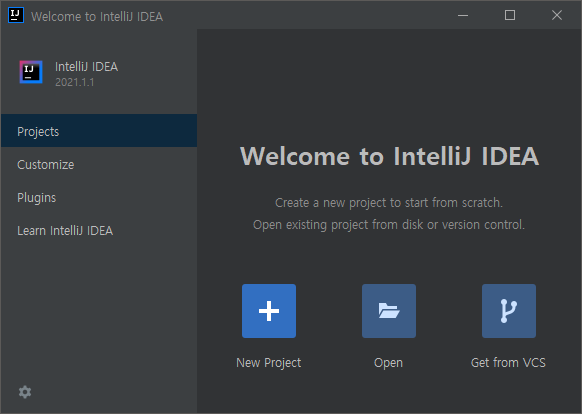
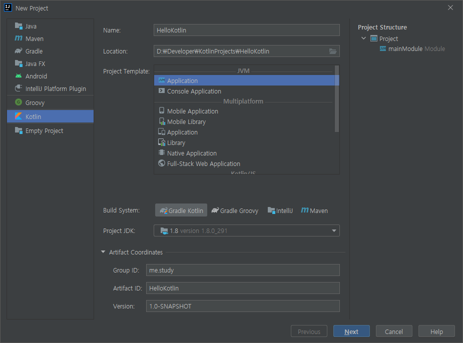
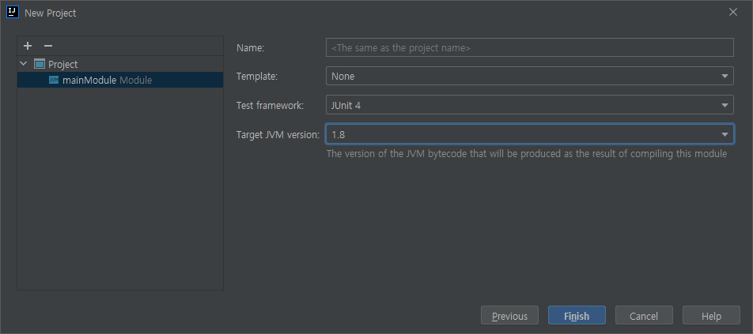
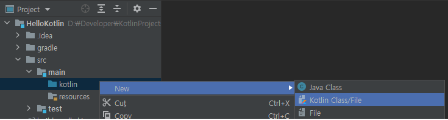
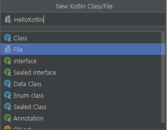

publish
download
첫째 마당
Kotlin
기본 익히기
01시작하기
01-1 탄생 배경
소개합니다
IntelliJ IDEA라는 통합 개발 환경으로 유명한 JetBrains에서 개발했다.
종류
- Kotlin/JVM : Java 가상 Machine에서 동작하는 application을 만들 수 있다.
- Kotlin/JS : Javascript로 web browser에서 동작하는 application을 만들 수 있다.
- Kotlin/Native : LLVM compiler를 이용하여 여러 platform을 target으로 하는 application을 만들 수 있다.
사용 환경
- Apple iOS (arm32, arm64, emulator x86_64)
- Apple Mac OS(x86_64)
- Android (arm32, arm64)
- Windows (MinGW x86_64)
- Linux (x86_64, arm32, MIPS, MIPS litter-endian)
- Web 전용(wasm32)
Java와 완벽하게 호환된다.
장점
- Compiled 자료형을 검사하여 확정하는 정적 언어로 자료형 오류를 초기에 발견할 수 있다.
- NPE Null pointer exception로 인한 program의 중단을 예방할 수 있다.
- 아주 간결하고 효율적이다.
- 함수형 programming과 객체 지향 programming이 모두 가능하다.
- ';' 을 생략할 수도 있다.
Android 공식 언어로 채택된 Kotlin
JDK 들
IntelliJ IDEA 설치하기
IntelliJ IDEA 2021.1.1 (211.7142.45 build)
01-3 Kotlin project 시작하기
Kotlin project 만들기
Hellokotlin project 만들기





HelloKotlin.kt
fun main() {
println("Hello Kotlin!")
}
Run > Run > HelloKotlinKt > Run menu를 선택해서 실행한다.
// 결과
"C:\Program Files\Java\jdk1.8.0_291\bin\java.exe" ...
Hello Kotlin!
Process finished with exit code 0
Project 하나씩 뜯어보기
Kotlin의 main() 함수는 program의 실행 진입점
- Kotlin code는 JVM에서 실행되며,
main() 함수가 있는 file 이름을 기준으로 Java class가 자동 생성된다.
- 자동 생성된 class는
Tools > Kotlin > Show Kotlin Bytecode에서 Decompile(역compile) button을 누르면 확인할 수 있다.
// compiler의 version에 따라 다를 수 있다.
import kotlin.Metadata;
import kotlin.jvm.internal.Intrinsics;
import org.jetbrains.annotations.NotNull;
@Metadata(
mv = {1, 5, 1},
k = 2,
d1 = {"\u0000\u0014\n\u0000\n\u0002\u0010\u0002\n\u0000\n\u0002\u0010\u0011\n\u0002\u0010\u000e\n"+
"\u0002\b\u0002\u001a\u0019\u0010\u0000\u001a\u00020\u00012\f\u0010\u0002\u001a\b"+
"\u0012\u0004\u0012\u00020\u00040\u0003¢\u0006\u0002\u0010\u0005¨\u0006\u0006"},
d2 = {"main", "", "args", "", "", "([Ljava/lang/String;)V", "HelloKotlin.main"}
)
public final class HelloKotlinKt {
public static final void main(@NotNull String[] args) {
Intrinsics.checkNotNullParameter(args, "args");
String var1 = "Hello Kotlin!";
boolean var2 = false;
System.out.println(var1);
}
}
Program의 memory 영역
| 종류 |
설명 |
| Code |
명령어가 저장된다. |
| Data |
문자열, 정적 변수등이 저장된다. Method Static Area, 정적 memory 영역, literal pool |
| Heap |
실행 중 생성되는 객체들이 저장된다. arrow_downward 아래쪽 방향으로 증가, 동적 memory 영역 |
| Stack |
지역 변수나 함수 호출 정보(매개변수)가 저장된다. arrow_upward위쪽 방향으로 증가 |
infoGarbage Collection : JVM은 더 이상 참조하지 않는 객체들을 자동으로 memory에서 삭제해준다.
Kotlin의 main() method에서 매개변수를 사용할 경우
main()에 전달할 외부의 인자들을 가리키고, 명령행에서 입력받은 값들이 차례대로 배열에 저장된다.
fun main(args: Array<String>) {
for (str in args) {
println(str)
}
}
Run > Edit Configurations... > Program arguments 에 'Good 안녕 123'을 입력한다.
// 실행 결과 화면
"C:\Program Files\Java\jdk1.8.0_291\bin\java.exe" ...
Good
안녕
123
Process finished with exit code 0
02변수와 자료형, 연산자
02-1코틀린 패키지
Kotlin에서 Project는 Module, Package, File로 구성된다.
Project, Module, Package, File의 관계 이해하기
- HelloKotlin (Project)
- HelloKotlin (Module 1)
- OtherModule (Module 2)
- default package는 src folder에 따로 package 이름을 지정하지 않은 file들이 포함된다.
- Kotlin file은 .kt 확장자를 가지며 compiler가 알 수 있도록 file의 맨 위에는 이 file이 속한 package 이름을 선언해야 한다.
- 그렇지 않으면 자동으로 default package에 포함된다.
- file이 package folder 안에 있어도 package 이름을 선언하지 않으면 default package에 포함된 것으로 인식한다.
- File에 1개의 class가 정의되어 있다면 project 창 화면에 .kt 확장자가 빠진 class 이름만 보인다.
- File에 여러 개의 class를 정의한다면 file은 단순히 class를 묶는 역할을 하고 .kt 확장자가 붙게 된다.
- Kotlin에서는 file 이름과 class의 선언 개수에 큰 의미를 두지 않는다.
- 같은 file에 들어 있는 class들은 모두 그 file에 지정한 package로 인식한다.
- Kotlin은 Java처럼 class 이름과 file 이름이 같아야 하고, plublic class는 하나만 사용해야 하는 규칙이 없다.
Package를 만들어야 하는 이유
같은 이름의 file이라도 package가 다르면 다른 file로 인식되어 중복 오류가 발생하지 않는다.
Kotlin project에 package 만들기
Package 이름 정하기
- 이름은 file 첫 줄에 적는다.
- package keyword를 앞에 붙인다.
- 이름은 특수문자나 숫자로 시작하면 안된다.
- 여러 단계의 분류가 필요하면 . 을 붙여 이름을 짓는다.
package com.acaroom.net.upload
info IntelliJ에서 Kotlin/JVM project는 /src/main/kotlin folder를 기준으로 package, file들을 만든다.
기본 package 활용하기
- 기본 package는 자주 사용하는 class와 함수 등을 미리 만들어 놓은 것이다.
import keyword로 package를 선언하지 않아도 바로 사용할 수 있다.
기본 package
| 이름 |
설명 |
kotlin.* |
Any, Int, Double 등 핵심 함수와 자료형 |
kotlin.text.* |
문자와 관련된 API |
kotlin.sequences.* |
Collection 자료형의 하나로 반복이 허용되는 개체를 열거 |
kotlin.ranges.* |
if 문이나 for 문에서 사용할 범위 관련 요소 |
kotlin.io.* |
입출력 관련 API |
kotlin.collections.* |
List, Set, Map 등의 collection |
kotlin.annotation.* |
주석 관련 API |
별표(*)는 해당 package에 포함된 모든 요소를 의미한다.
IntelliJ 단축키
- Ctr + B : 선택한 class나 함수의 source file을 찾아 보여준다.
- Ctrl + Shift + F10 : 현재 file 실행하기
사용자 class 가져오기
package com.example.edu.Person
class Person(val name: String, val age: Int) { ... }
package chap02.section1
// 같은 이름의 class가 있을 때 as 로 별명을 지정 할 수 있다.
import com.example.edu.Person as User
fun main(args: Array<String>) {
val user1 = User("Kildong", 30)
println(user1.name)
println(user1.age)
// 이 package에 선언된 Person
val user2 = Person("A123", "Kildong")
println(user2.id)
println(user2.name)
}
class Person(val id: String, val name: String) { ... }
02-2변수와 자료형
변수를 선언하고 자료형 추론하기
value : 읽기 전용, 변경 불가 변수variable : 변경 가능 변수
변수 이름 짓기 규칙
- 영문자, 숫자, _ 만 사용할 수 있다.
- 숫자로 시작할 수 없다.
- keyword는 사용할 수 없다.
- 여러 단어로 구성된 이름은 소문자로 시작하는 낙타표기법을 사용하면 좋다.
예) lowerCamelCase
변수를 선언하는 방법
| 방법 |
설명 |
val username: String = "Kildong" |
선언 keyword 변수이름: 자료형 = 값 |
val username = "Kildong" |
초기화 값을 보고 자료형을 추론한다.
Ctrl+Shift+P : 추론한 자료형을 알려준다.
|
val username |
warning 초기값이 없어서 자료형을 추론하지 못한다. |
val username: String |
이런 경우 자료형을 반드시 지정해야 한다. |
자료형 알아보기
Kotlin의 자료형은 참조형을 사용한다
- Primitive Data Type (기본형)
- Reference Type (참조형)
객체를 생성하고 heap(동적 memory 영역)에 data를 저장한 후 이것을 참조하는 자료형.
(* Kotlin에서 참조형은 성능 최적화를 위해 컴파일러에서 다시 기본형으로 대체된다.)
기본형과 참조형의 동작 원리
Java에서 기본형은 stack에 값이 저장되고 참조형은 참조하는 객체가 heap에 저장되고 그 주소가 stack에 저장된다.
정수 자료형
부호가 있는 정수 자료형signed
| 형식 |
자료형 |
크기
(Bits) |
값의 범위 |
| 정수 자료형 |
Byte |
8 |
-2 7 ~ 2 7-1 |
Short |
16 |
-215 ~ 215-1 |
Int |
32 |
-231 ~ 231-1 |
Long |
64 |
-263 ~ 263-1 |
val a = 123 // 10진수 표현
val b = 123L // Long 형으로 추론
val c = 0x0F // 16진수 표현
val d = 0b00001111 // 2진수 표현
보통 숫자값은 Int형으로 추론되기 때문에 좀 더 작은 범위의 정수 자료형인 Byte형이나 Short형을 사용하기 위해서는 직접 자료형을 명시해야 한다.
부호가 없는 정수 자료형unsigned
| 형식 |
자료형 |
크기
(Bits) |
값의 범위 |
부호 없는
정수 자료형 |
UByte |
8 |
0 ~ 2 8-1 |
UShort |
16 |
0 ~ 216-1 |
UInt |
32 |
0 ~ 232-1 |
ULong |
64 |
0 ~ 264-1 |
부호 없는 자료형에는 u 식별자를 사용해야 한다. 없으면 값을 할당할 수 없다.
val a: UInt = 153u
val b: ULong = 46322342uL
_로 자리값을 구분할 수 있다. 값에 영향을 주지 않는다.
val million = 1_000_000
val cardNumber = 1234_1234_1234_1234
val hexVal = 0xAB_CD_EF_12
val binary = 0b1010_0101
실수 자료형
| 형식 |
자료형 |
크기
(Bits) |
값의 범위 |
| 실수 자료형 |
Float |
32 |
약 1.4E-45 ~ 3.4E+38 (IEEE 754 표준) |
Double |
64 |
약 4.9E-324 ~ 1.7E+308 (IEEE 754 표준) |
- 실수도 자료형을 명시하지 않으면
Double형으로 추론된다.
Float형으로 지정하고 싶다면 식별자 F를 값 뒤에 붙이면 된다.
val a = 3.14 // Double형으로 추론. 기본
val b = 3.14F // Float형으로 추론.
| 일반 수학의 표현 |
Source code상의 표현 |
| 3.14가수 x 10밑수16지수 |
3.14(소수점이 없을 수도 있다.)E(또는 e) +(- 또는 +, +는 생략 가능) 16 |
val exp1 = 3.14E-2 // 0.0314
val exp2 = 3.14e2 // 314
부동 소수점 제대로 이해하기(IEEE 754 표준)
info지수부에 저장되는 값은 (지수 bias + 실제 지수 값) 이다.
값이 2의 보수로 저장 되는데 이 때 음수값의 비교를 쉽게 하기위해 지수 bias를 적용해 양수값으로 저장되게 한다.
32 bits Float (지수 bias : 27-1 = 127)
|
부호 1 bit |
지수 exponent, 8 bits |
가수 fraction or mantissa, 23 bits |
| Bit 번호 |
31 |
30...23 |
22...0 |
| 값 |
0 : 양수
1 : 음수 |
- 0 : 비정규화값 denormalized number
가장 작은 일반 숫자보다 더 작은 0이 아닌 값.
- 0b0000_0001 ~ 0b1111_1110 : 실제 지수값 범위: -126 ~ 127
- 0b1111_1111 : 무한대값
| |
64 bits Float (지수 bias : 210-1 = 1023)
|
부호 1 bit |
지수 exponent, 11 bits |
가수 fraction or mantissa, 52 bits |
| Bit 번호 |
63 |
62...52 |
51...0 |
| 값 |
0 : 양수
1 : 음수 |
- 0 : 비정규화값 denormalized number
가장 작은 일반 숫자보다 더 작은 0이 아닌 값.
- 0b000_0000_0001 ~ 0b111_1111_1110 : 실제 지수값 범위: -1022 ~ 1023
- 0b111_1111_1111 : 무한대값
| |
정수값을 2진수로 표현하기
- 정수값을 2로 나누어 나머지를 취한다.
- 몫을 다음 정수값으로 사용한다.
|
나머지 |
자리순서 |
| 10 ÷ 2 = 5, 0 |
0 |
low
arrow_upward
hi |
| 5 ÷ 2 = 2, 1 |
1 |
| 2 ÷ 2 = 1, 0 |
0 |
| 1 ÷ 2 = 0, 1 |
1 |
| 1010 |
10102 |
소수값을 2진수로 표현하기
- 소수값에 2를 곱한 결과값에서 정수 부분을 취한다.
- 다음 소수값은 이 정수 값을 뺀 값으로 한다.
|
정수부 |
자리순서 |
| 0.375 x 2 = 0.75 |
0 |
hi
arrow_downward
low |
| (0.75 - 0) x 2 = 1.5 |
1 |
| (1.5 - 1) x 2 = 1.0 |
1 |
| 0.37510 |
0.0112 |
info정수부는 항상 1이 되게 정규화한 후 값을 저장한다.
예) -12.37510를 32bits의 float 형식으로 표현하면 음수이므로 부호 bit는 1이고,
절댓값 12.37510의 2진수는 1100.0112이다.
이 값을 정수부가 항상 1이 되게 정규화 하면 1.100011 x 23이 된다.
항상 1인 정수부를 제외한 소수부 1000112만 가수부에 저장한다. 뒤쪽엔 0으로 채운다.
지수부는 (3 + 127지수 bias 값)인 13010의 2진수인 100000102를 저장한다.
11000001010001100000000000000000
부동소수점을 사용할 때는 오차에 주의해야 한다.
fun main() {
var num = 0.0
for (i in 1..10)
num += 0.1
println(num) // 0.9999999999999999 warning1.0이 아니다!
}
정수 자료형과 실수 자료형의 최솟값과 최댓값 알아보기
각 자료형에 MIN_VALUE, MAX_VALUE 상수가 정의되어 있다.
2의 보수
음수는 2의 보수로 표현한다.
| 0b0000_0001 |
+1 |
| 0b1111_1110 |
1의 보수는 각 bit를 반대로 하면 된다. |
| 0b1111_1111 |
1의 보수에 +1를 하면 2의 보수가 된다. -1 |
(* 컴퓨터는 뺄셈을 2의 보수와의 합으로 계산한다.)
논리 자료형
| 형식 |
자료형 |
크기(Bits) |
값 |
| 논리 자료형 |
Boolean |
1Java에서 |
true, false |
val isOpen = true // Boolean으로 추론
val isUploaded: Boolean // 선언만 한 경우 자료형을 반드시 명시
문자 자료형
문자를 작은따옴표(')로 감싸 표현한다.
| 형식 |
자료형 |
크기(Bits) |
값 |
| 문자 자료형 |
Char |
16 |
0 ~ 215-1 (\u0000 ~ \uffff) |
val ch = 'A'
val ch1: Char
println(ch + 1) // 'B'
val ch2: Char = 65 // error!
val code: Int = 65
val ch3 = code.toChar() // 'A'
val ch4 = '\uD55C' // unicode '한'
문자열 자료형(String) 알아보기
문자 자료형인 Char은 기본형으로 처리되지만, 문자열 자료형은 기본형에 속하지 않는 배열 형태로 되어 있는 특수한 자료형이다.
문자열 자료형 선언과 저장 방식 이해하기
fun main() {
val str1: String = "Hello"
val str2 = "World"
val str3 = "Hello"
// === : 참조 비교. 객체의 주소를 비교한다.
println("str1 === str2 is ${str1 === str2}")
println("str1 === str3 is ${str1 === str3}")
}
>>
str1 === str2 is false
str1 === str3 is true
Heap
| A1arrow_forward |
| A2arrow_forward |
|
|
| 주소: A1 |
arrow_back str3 |
| 주소: A2 |
arrow_back str2 |
| 주소: A1 |
arrow_back str1 |
| Stack |
|
String 형 선언 및 할당에 사용되는 memory는 String Pool이다.
표현식과 $ 기호 사용하여 문자열 출력하기
val a = 1
val s1 = "a is $a" // a is 1
val s2 = "(a + 1) is ${a + 1}" // (a + 1) is 2
변수가 아니라 표현식을 문자열에 포함하려면 {} 를 사용한다.
Escape 문자 \를 사용해 문자열 안에 ", $를 표시할 수 있다.
val str = "\"hello\", I have \$15"
val str2 = "${'"'}hello${'"'}, I have ${'$'}15"
>>
"hello", I have $15
형식화된 다중 문자열 사용하기
val str5 = """
abc
abc
abc"""
println(str5)
>
abc
abc
abc
자료형에 별명 붙이기
typealias UserName = String
val userName: UserName = "Peter"
02-3자료형 검사하고 변환하기
- 변수를 사용할 때 반드시 값이 할당되어 있어야 한다.
- 값이 없는 상태를 null 이라고 한다.
- null 상태인 변수를 허용하려면 ?를 사용해 선언한다.
이 변수를 사용하려면 null을 검사하고 처리하는 방법을 고려해야 한다.
null을 허용한 변수 검사하기
프로그램 실행 중 값이 null인 변수에 접근하면 NPE(Null Point Exception) 예외 오류가 발생한다.
변수에 null 할당하기
fun main() {
var str: String = "Hello"
str = null // Error!
var str2: String? = "World"
str2 = null // OK
}
Safe call(?.)과 non-null 단정 기호(!!.)를 활용하여 null을 허용한 변수 사용하기
조건문을 활용해 null을 허용한 변수 검사하기
val length = if (str2 != null) str2.length else -1
Safe call과 Elvis 연산자(?:)를 활용해 null을 허용한 변수 더 안전하게 사용하기
val length = str2?.length ?: -1
자료형 비교하고 검사하고 변환하기
자료형이 서로 다른 변수를 비교하거나 연산할 수 없다.
자료형 변환
val a: Int = 1
val b: Double = a // Type mismatch error!
val c: Int = 1.1 // Type mismatch error!
// 변환 method 사용
val d: Double = a.toDouble() // OK
// 표현식에서는 자료형이 표현할 수 있는 범위가 큰 자료형으로 자동 형 변환하여 연산한다.
val result = 1L + 3 // Long형 + Int형 -> result는 Long형
자료형 변환 method 들
- toByte: Byte
- toLong: Long
- toShort: Short
- toInt: Int
- toFloat: Float
- toDouble: Double
- toChar: Char
기본형과 참조형 자료형의 비교 원리
- 구조적 동등성(Structural equality). equals()를 이용한 비교
- 참조 동등성(Referential equality). 두 개의 참조가 같은 객체를 가리키는지 비교
- ===, !==
- a === b는 a와 b가 같은 객체를 가리킬 때만 true이다.
- 기본형의 === 비교는 == 비교와 같다.
info저장되는 값이 -128~127 사이의 값이면 cache에 저장되어 참조된다.
이 경우 기본형이 stack에 값으로 저장되지 않고 값이 저장된 cache의 주소를 참조하게 된다.
Smart Cast 알아보기
자료형 검사하기 is, !is
is는 변수의 자료형을 검사한 다음 그 변수를 해당 자료형으로 변환하는 기능도 있다.
fun main() {
val x: Any // 임의의 자료형
x = "Hello"
if (x is String) {
println(x.length) // x는 String으로 smart cast 된다.
}
}
as에 의한 Smart Cast
as는 형 변환이 불가능하면 예외를 발생시킨다.
// y가 null 이거나 String으로 형 변환이 불가능하면 예외 발생.
val x: String = y as String
// y가 null 이거나 String으로 형 변환이 불가능하면 null을 return.
val x: String? = y as? String
묵시적 변환
- open class Any는 최상위 class 이다.
- Any형은 자료형이 특별히 정해지지 않은 경우에 사용한다.
- Any형은 무엇이든 될 수 있기 때문에 언제든 필요한 자료형으로 자동 변환할 수 있다.(묵시적 변환)
fun main() {
var a: Any = 1 // Int형
a = 20L // Long 형
println("a is $a, type is ${a.javaClass}") // .javaClass: Java 기본형을 출력
}
>> a is 20, type is class java.lang.Long
02-4코틀린 연산자
기본 연산자
수식의 구조
|
표현식 |
|
항 |
|
항 |
| val result |
= |
num1 |
+ |
num2 |
|
|
대입
이항 연산자 |
|
덧셈
이항 연산자 |
|
산술 연산자
| 연산자 |
의미 |
| + |
덧셈 |
| - |
뺄셈 |
| * |
곱셈 |
| / |
나눗셈 |
| % |
나머지 Modulus |
대입 연산자 =
변수에 값을 할당하는 연산자. 이항 연산자 중 우선순위가 가장 낮다.
| 연산자 |
의미 |
| = |
a = b |
| += |
a += b, a = a + b |
| -= |
a -= b, a = a - b |
| *= |
a *= b, a = a * b |
| /= |
a /= b, a = a / b |
| %= |
a %= b, a = a % b |
증가 연산자와 감소 연산자
단항 연산자
| 연산자 |
의미 |
| ++ |
b = a++ |
b = a, a = a + 1 |
| b = ++a |
a = a + 1, b = a |
| -- |
b = a-- |
b = a, a = a - 1 |
| b = --a |
a = a - 1, b = a |
비교 연산자
결과 값은 true 또는 false 이다.
| 연산자 |
| >, >=, <, <= |
| ==, != |
| ===, !== |
논리 연산자
| 연산자 |
의미 |
| && |
AND |
| || |
OR |
| ! |
NOT |
info단축평가 Short Circuit Evaluation
// a 가 true 라면 b는 검사하지 않고 true를 return 한다.
val x = a || b
// a 가 false 라면 b는 검사하지 않고 false를 return 한다.
val y = a && b
Bit 연산자
Bit와 Bit 연산
Bit 연산을 위한 Bit Method
val x = 4.shl(1) // 함수 호출 형식
val y = 4 shl 1 // 중위 표현식. infix
class Int의 Bit 연산자
| 예시 |
설명 |
shl(bits) |
shift left. 왼쪽으로 bits 만큼 이동. 부호 있음 |
사라진 bit는 0으로 채우고 부호 bit는 그대로 둔다. |
shr(bits) |
shift right. 오른쪽으로 bits 만큼 이동. 부호 있음 |
ushr(bits) |
unsigned shift right. 오른쪽으로 bits 만큼 이동. 부호 없음 |
제일 왼쪽 bit에 0을 채운다. |
and(bits) |
bits와 논리곱 연산 |
0b1100 and
0b1010
0b1000
|
or(bits) |
bits와 논리합 연산 |
0b1100 or
0b1010
0b1110
|
xor(bits) |
bits와 배타적 연산 |
0b1100 xor
0b1010
0b0110
|
inv() |
모든 bit를 반대로 한다. invert |
1.inv() == -2 |
infoIntelliJ Debug 관련 단축키
- Ctrl +F8 : Break Point Toggle 설정
- Shift+F9 : Debugging Run
- F8 : Step Over. 한 줄씩 실행.
- Debug > Variables 창에 있는 변수를 선택한 후 Pop-up menu에서 View As > Binary를 선택하면 2진수로 값을 볼 수 있다.
infoxor 3번으로 두 값 swap 하기
fun main() {
var a = 12
var b = 25
a = a xor b
b = a xor b
a = a xor b
println(a) // 25
println(b) // 12
}
03함수와 함수형 프로그래밍
03-1함수 선언하고 호출하기
함수란 무엇일까?
함수는 여러 값(인자)을 입력받아 기능을 수행하고 결괏값을 반환하는 code의 모음이다.
함수의 구조 자세히 살펴보기
fun sum(a: Int, b: Int): Int {
val sum = a + b
retrn sum
}
fun keyword로 함수 선언 시작하기- 함수 이름 짓기
- 매개변수는 ,와 함께 여러 개를 지정할 수 있다. 반드시 :과 함께 자료형을 명시해야 한다.
- 함수가 반환하는 값이 있다면 반환값의 자료형도 반드시 명시해야 한다.
- 함수의 본문 완성하기
- return keyword와 함께 반환할 값을 명시한다. 반환할 값이 없다면 생략할 수 있다.
// 함수의 기본형. [] 부분은 생략 가능.
fun 함수_이름([매개변수이름:자료형, 매개변수이름:자료형...])[: 반환값의_자료형] {
표현식...
[return 반환값]
}
간략하게 선언하기
{} 안의 code가 한 줄이면 {}와 return문을 생략할 수 있다.
fun sum(a: Int, b: Int) = a + b
함수 호출과 Program의 실행 순서
- Program의 진입점 main() 함수가 가장 먼저 실행된다.
- 인자와 함께 함수를 호출한다.
- 매개변수 Parameter - 함수를 선언할 때 사용하는 변수
- 인자 Argument - 함수를 호출할 때 사용하는 실제 값
- Program의 실행 흐름이 함수로 이동한다.
- 함수가 반환되면 실행 흐름이 다시 main()으로 돌아온다.
함수의 호출과 Memory
fun main() {
val num1 = 10
val num2 = 3
val result = max(num1, num2)
println(result)
}
fun max(a: Int, b: Int): Int = if (a > b) a else b
함수와 Stack Frame
함수의 각 정보는 Frame이라는 정보로 Stack memory의 높은 주소부터 거꾸로 자라듯이 채워져 간다.
Stack과 각 함수의 Stack Frame
| 낮은 주소 |
Heap |
|
|
|
|
|
|
vertical_align_bottom |
|
|
|
| max() 함수의 stack frame |
vertical_align_top
생성
방향 |
3 |
west b |
|
10 |
west a |
| 지역 변수 |
|
|
main() 함수의 stack frame
- 지역 변수
- 항(Operand) Stack
- 상수 Pool
|
? |
west result |
| 3 |
west num2 |
| 10 |
west num1 |
| 0 |
west args |
| 지역 변수 |
|
| 높은 주소 |
Stack |
|
지역 변수 - 함수가 종료되면 stack frame과 함께 사라지는 임시 변수.
Stack Frame의 생성과 소멸
함수가 호출될 때마다 해당 정보는 stack memory에 쌓이는데 이것을 stack frame이라고 부른다.
- 함수가 호출되면 stack에 frame이 생긴다.
- Stack frame은 각각 분리되어 있다.
- Frame으로 분리된 변수들을 지역 변수라고 부른다.
- 함수 호출 순서대로 stack에 생성되고 역순으로 소멸한다.
- Stack의 내용이 최대 영역을 초과하면 Stack Overflow가 발생한다.
반환값이 없는 함수
반환값의 자료형을 Unit으로 지정하거나 생략한다.
Unit은 Java의 void형에 대응되지만 void는 정말로 아무것도 반환하지 않고 Unit은 특수한 객체를 반환한다.
매개변수 제대로 활용하기
매개변수에 기본값을 설정할 수 있다.
fun add(name: String, email: String = "nothing") {
// name, email을 회원 목록에 저장한다.
// email에 전달된 인자가 없으면 기본값으로 설정된 "nothing"를 사용한다.
}
add("peter", "peter@superhero.com")
add("parker") // email 값으로 "nothing"이 사용된다.
매개변수 이름과 함께 함수 호출하기
fun main() {
namedParam(x = 10, y = 20)
}
fun namedParam(x: Int, y: Int) { }
매개변수의 개수가 고정되지 않은 함수 사용하기 vararg
가변 인자 Variable Argument를 사용한다.
fun main() {
show(1, 2, 3)
}
fun show(vararg counts: Int) {
for (i in counts)
print(i)
}
>> 123
03-2함수형 Functional Programming
함수형 Programming이란?
순수 함수를 작성하여 program의 부작용을 줄이는 programming 기법이다.
순수 함수
- 함수가 같은 인자에 대하여 항상 같은 결과를 반환하면 '부작용이 없는 함수'라고 한다.
- 이런 함수가 함수 외부의 어떤 상태도 바꾸지 않는다면 순수 함수Pure Function라고 한다.
- 이런 특성 덕분에 순수 함수는 thread에 사용해도 안전하고 code를 test하기도 쉽다.
일급 객체 First Class Citizen
특징
- 함수의 인자로 전달할 수 있다.
- 함수의 반환값에 사용할 수 있다.
- 변수에 담을 수 있다.
함수가 일급 객체면 일급 함수라고 부른다.
일급 함수에 이름이 없는 경우 Lambda 함수 혹은 Lambda식이라고 부른다.
람다식 Lambda Express
- 일급 객체의 특징을 가진 이름 없는 함수
- 다른 함수의 인자로 넘기는 함수
- 함수의 결괏값으로 반환하는 함수
- 변수에 저장하는 함수
고차 함수 High Order Function
인자나 반환값으로 함수를 사용할 수 있다.
fun main() {
val x = highFunc({ a, b -> a + b }, 1, 2)
println(x)
}
fun highFunc(sum: (Int, Int) -> Int, a: Int, b: Int) = sum(a, b)
함수형 Programming의 정의와 특징
- 순수 함수를 사용해야 한다.
- Lambda식을 사용할 수 있다.
- 고차 함수를 사용할 수 있다.
03-3고차 함수와 Lambda식
고차 함수의 형태
일반 함수 를 인자나 반환값으로 사용하는 고차 함수
fun main() {
val res = sum(3, 2)
val res2 = mul(sum(3, 3), 3)
println("$res, $res2")
}
fun sum(a: Int, b: Int) = a + b
fun mul(a: Int, b: Int) = a * b
fun test(): Int {
return sum(2, 2)
}
Lambda식 을 인자나 반환값으로 사용하는 고차 함수
Lambda식 을 변수에 할당하는 경우
fun main() {
val multi: (Int, Int) -> Int = { x: Int, y: Int -> x * y } // 일반 변수에 lambda식 할당.
val res: Int = multi(10, 20) // Lambda식이 할당 된 변수는 함수처럼 사용할 수 있다.
}
Lambda식의 선언과 할당
|
|
|
lambda식의 자료형 선언 |
|
lambda식의 매개변수 |
|
lambda식의 처리 내용 |
|
| val multi |
: (Int, Int) -> Int |
= { |
x: Int, y: Int |
-> |
x * y |
} |
변수를
함수처럼
사용 가능 |
lambda식 매개변수에
자료형이 명시된 경우
생략 가능 |
|
자료형이
선언되어 있으면
생략 가능 |
|
함수의 내용과 결과 반환,
표현식이 여러 줄인 경우
마지막 표현식이 반환 |
|
val multi:(Int, Int) -> Int = { x: Int, y: Int -> x * y }
val multi:(Int, Int) -> Int = { x, y -> x * y }
val multi = { x: Int, y: Int -> x * y }
val multi = { x, y -> x * y } // Error! 자료형을 추론할 수 없다!
val greet: () -> Unit = { println("Hello") } // 매개변수가 없으므로 lambda 식에서 매개변수 선언 부분과 '->' 생략.
val greet = { println("Hello") } // 추론 가능
val square: (Int) -> Int = { x -> x * x }
val square = { x: Int -> x * x }
val nestedLambda: () -> () -> Unit = { { println("중첩") } }
val nestedLambda = { { println("중첩") } } // 추론 가능
val multi2 = { x: Int, y: Int ->
print("x * y = ")
x * y // 마지막 표현식이 반환
}
println(multi2(3, 4))
Lambda식 을 매개변수에 사용하는 경우
fun main() {
val result = highOrder({ x, y -> x + y }, 10, 20)
println(result) // 30
}
fun highOrder(sum: (Int, Int) -> Int, a: Int, b: Int): Int = sum(a, b)
인자와 반환값이 없는 lambda식
fun main() {
// val out: () -> Unit = { println("Hello") }
val out = { println("Hello") }
out()
val out2 = out
out2()
}
Lambda식과 고차 함수 호출하기
- 기본형 변수로 할당된 값은 stack에 있다.
- 다른 함수에 인자로 전달하는 경우에는 해당 값이 복사되어 전달된다.
- 참조형 변수로 할당된 객체는 참조 주소가 stack에 있고 객체는 heap에 있다.
- 참조형 객체는 함수에 전달될 때 참조된 주소가 복사되어 전달된다.
- JVM에서 실행되는 Java나 Kotlin은 함수를 호출할 때 인자의 값을 복사하는 '값에 의한 호출' Call by value 방식을 사용한다.
값에 의한 호출
함수가 인자로 전달될 경우 lambda식 함수는 값으로 처리되어 그 즉시 함수가 수행된 후 그 결과 값을 전달한다.
fun main() {
val result = callByValue(lambda()) // lambda식 함수를 호출
println(result)
}
// 일반 변수 자료형으로 선언된 매개변수
fun callByValue(b: Boolean): Boolean {
println("callByValue function")
return b
}
val lambda: () -> Boolean = {
println("lambda function")
true
}
>>
lambda function
callByValue function
true
이름에 의한 Lambda식 호출
fun main() {
val result = callByName(otherLambda) // lambda식 이름으로 호출
println(result)
}
// lambda식 자료형으로 선언된 매개변수
fun callByName(b: () -> Boolean): Boolean {
println("callByName function")
return b() // 여기서 lambda식 함수를 호출
}
val otherLambda: () -> Boolean = {
println("otherLambda function")
true
}
>>
callByName function
otherLambda function
true
다른 함수의 참조에 의한 일반 함수 호출 ::
fun main() {
val result = funcParam(3, 2, ::sum)
println("result = $result")
}
fun sum(a: Int, b: Int) = a + b
fun funcParam(a: Int, b: Int, c: (Int, Int) -> Int): Int {
return c(a, b)
}
>>
result = 5
fun main() {
// 인자와 반환값이 있는 함수
val res1 = funcParam(3, 2, ::sum)
println(res1)
// 반환값이 없는 함수
hello(::text)
hello({ a, b -> text(a, b) }) // lambda식 표현
hello { a, b -> text(a, b) } // 소괄호 생략 가능
// 일반 변수에 값처럼 할당
val likeLambda = ::sum
println(likeLambda(6, 6))
}
fun sum(a: Int, b: Int) = a + b
fun funcParam(a: Int, b: Int, c: (Int, Int) -> Int): Int {
return c(a, b)
}
fun text(a: String, b: String) = "Hi! $a $b"
fun hello(body: (String, String) -> String): Unit {
println(body("Hello", "World"))
}
>>
5
Hi! Hello World
Hi! Hello World
Hi! Hello World
12
Lambda식의 매개변수
Lambda식에 매개변수가 없는 경우
fun main() {
noParam({ "Hello World!" })
noParam { "Hello World!" } // () 생략 가능
}
fun noParam(out: () -> String) = println(out())
>>
Hello World!
Hello World!
Lambda식의 매개변수가 1개인 경우
fun main() {
oneParam({ a -> "Hello World! $a" })
oneParam { a -> "Hello World! $a" }
oneParam { "Hello World! $it" }
}
fun oneParam(out: (String) -> String) {
println(out("One param"))
}
>>
Hello World! One param
Hello World! One param
Hello World! One param
Lambda식의 매개변수가 2개 이상인 경우
fun main() {
moreParam { a, b -> "Hello World! $a $b" }
}
fun moreParam(out: (String, String) -> String) {
println(out("OneParam", "TwoParam"))
}
>>
Hello World! OneParam TwoParam
Lambda식의 특정 매개변수를 사용하고 싶지 않을 때는 이름 대신에 '_' underscore로 대체할 수 있다.
moreParam { _, b -> "Hello World! $b" }
일반 매개변수와 Lambda식 매개변수를 같이 사용하기
fun main() {
withArgs("Arg1", "Arg2", { x, y -> "Hello World! $x $y" })
// 함수의 마지막 인자가 lambda식인 경우 () 바깥으로 분리 가능
withArgs("Arg1", "Arg2") { x, y -> "Hello World! $x $y" }
}
fun withArgs(a: String, b: String, out: (String, String) -> String) = println(out(a, b))
>>
Hello World! Arg1 Arg2
Hello World! Arg1 Arg2
일반 함수에 Lambda식 매개변수를 2개 이상 사용하기
fun main() {
twoLambda({ a, b -> "First $a $b" }, { "Second $it" })
// 함수의 마지막 인자가 lambda식인 경우 () 바깥으로 분리 가능
twoLambda({ a, b -> "First $a $b" }) { "Second $it" }
}
fun twoLambda(first: (String, String) -> String, second: (String) -> String) {
println(first("OneParam", "TwoParam"))
println(second("OneParam"))
}
>>
First OneParam TwoParam
Second OneParam
First OneParam TwoParam
Second OneParam
03-4고차 함수와 Lambda식의 사례 알아보기
동기화를 위한 code 구현 구경하기
import java.util.concurrent.locks.ReentrantLock
var sharable = 1 // 보호가 필요한 공유 자원.
fun main() {
val reLock = ReentrantLock()
// 아래 3 표현식은 모두 같다.
lock(reLock, { criticalFun() })
lock(reLock) { criticalFun() }
lock(reLock, ::criticalFun)
println(sharable)
}
// 공유 자원을 변경하는 함수
fun criticalFun() {
++sharable
}
// T는 Generic의 형식 매개변수
fun <T> lock(reLock: ReentrantLock, body: () -> T): T {
reLock.lock()
try {
return body()
} finally {
reLock.unlock()
}
}
>> 4
infoCallback 함수 : 특정 event가 발생하기 전까지 처리되지 않다가 event가 발생하면 즉시 호출되어 처리되는 함수.
사용자가 아닌 system이나 event에 따라 호출 시점이 결정된다.
03-5Kotlin의 다양한 함수 알아보기
익명 함수 Anonymous Function
이름이 없는 일반 함수.
fun(x: Int, y: Int): Int = x + y
// 동일한 표현
val add: (Int, Int) -> Int = fun(x, y) = x + y
val add = fun(x: Int, y: Int) = x + y
// 동일한 lambda식 표현
val add = { x: Int, y: Int -> x + y }
Lambda식에서는 return, break, continue 같은 제어문을 사용하기 어려워서 익명함수를 사용한다.
Inline 함수 Inline Function
함수가 호출되는 곳에 함수 본문의 내용을 모두 복사해 넣어 함수의 분기 없이 처리되기 때문에 성능을 높일 수 있다.
fun main() {
shortFunc(3) { println("First call: $it") }
shortFunc(5) { println("Second call: $it") }
}
inline fun shortFunc(a: Int, out: (Int)->Unit) {
println("Before calling out()")
out(a)
println("After calling out()")
}
역컴파일 Decompile된 내용으로 inline 함수 살펴보기
IntelliJ IDEA의 Tools > Kotlin > Show Kotlin Bytecode 메뉴를 선택하고 Kotlin Bytecode 창에서 Decompile button을 누른다.
Decompile된 file이 .java인 이유는 현재 Kotlin이 JVM에서 수행되고 있어 내부적으로 Java code와 동일한 실행 문맥을 가지기 때문이다.
Inline 함수 제한하기 noinline
Inline 함수의 매개변수로 사용한 lambda식의 code가 너무 길거나 함수의 본문 자체가 너무 길면 compiler에서 성능 경고를 할 수 있다.
또 inline 함수가 너무 많이 호출되면 오히려 code 양만 늘어나서 좋지 않을 수 있다.
// 매개변수 lambda식들도 그대로 복사가 된다.
inline fun sub(out1: () -> Unit, out2: () -> Unit)
// out1만 복사가 되고, out2는 호출 방식으로 사용된다.
inline fun sub(out1: () -> Unit, noinline out2: () -> Unit)
Inline 함수와 비지역 반환 Non-local Return
- Kotlin에서는 익명 함수를 종료하기 위해
return을 사용할 수 있다.
이때 특정 반환값 없이 return만 사용해야 한다.
return문은 lambda식 본문에 사용할 수 없다.- Inline 함수에서 사용한 lambda식에서는
return을 사용할 수 있다.
fun main() {
shortFunc(3) {
println("First call: $it")
return // Non-local Return
}
}
inline fun shortFunc(a: Int, out: (Int) -> Unit) {
println("Before calling out()")
out(a)
println("After calling out()") // 실행이 안된다.
}
>>
Before calling out()
First call: 3
Lambda식에서 return문을 만났지만 바깥 함수인 shortFunc()가 반환되었다.
fun main() {
shortFunc(3) {
println("First call: $it")
return@shortFunc
}
}
inline fun shortFunc(a: Int, out: (Int) -> Unit) {
println("Before calling out()")
out(a)
println("After calling out()")
}
>>
Before calling out()
First call: 3
After calling out()
out()을 직접 호출해 사용하지 않고 또 다른 함수로 전달하면 실행 문맥이 달라져서 return을 사용할 수 없다.
이때 비지역 반환을 금지하기 위해 crossinline을 사용한다.
fun main() {
shortFunc(3) {
println("First call: $it")
return@shortFunc // 그냥 return은 사용불가.
}
}
inline fun shortFunc(a: Int, crossinline out: (Int) -> Unit) {
println("Before calling out()")
nestedFunc { out(a) }
println("After calling out()")
}
fun nestedFunc(body: () -> Unit) {
body()
}
>>
Before calling out()
First call: 3
After calling out()
확장 함수 Extension Function
Class처럼 필요한 대상에 함수를 더 추가할 수 있다.
fun 확장대상.함수이름(매개변수, ...): 반환값 {
...
return 값
}
String class에 나만의 확장 함수 추가하기
fun main() {
println("Hello World!".getLongerString("Kotlin"))
}
// 더 긴 문자열을 반환하는 함수
fun String.getLongerString(other: String): String {
return when (length > other.length) {
true -> this
else -> other
}
}
>> Hello World!
확장 대상에 확장 함수와 같은 이름의 member method가 있다면 항상 member method가 먼저 호출된다.
중위 함수 Infix Function : infix
중위 표현법 Infix Notation 이란 class의 member를 호출할 때 사용하는 '.'을 생략하고 함수 이름 뒤에 ()를 붙이지 않아 직관적인 이름을 사용할 수 있는 표현법이다.
일종의 연산자를 구현할 수 있는 함수를 말한다.
중위 함수의 조건
- Member method 또는 확장 함수여야 한다.
- 하나의 매개변수를 가져야 한다.
- infix keyword를 사용해서 정의한다.
fun main() {
val a = 3.multiply(4) // 12
val b = 3 multiply 4 // 12
}
infix fun Int.multiply(other: Int): Int {
return this * other
}
꼬리 재귀 함수 Tail Recursive Function : tailrec
재귀 Recursion : 자기 자신을 다시 참조하는 방법
재귀 함수의 조건
- 무한 호출에 빠지지 않도록 탈출 조건을 만들어 준다. Stack Overflow 주의!
- Stack 영역을 이용하므로 호출 횟수를 무리하게 많이 지정해 연산하지 않는다.
- Code를 복잡하지 않게 한다.
factorial 재귀 함수로 stack overflow 경험하기
fun main() {
val n = 4
val result = factorial(n)
println("$n! = $result")
}
fun factorial(n: Int): Long {
return when {
n < 2 -> 1L
else -> n * factorial(n - 1)
}
}
>> 4! = 24
꼬리 재귀로 stack overflow 방지하기
tailrec fun factorial(n: Int, result: Int = 1): Long {
return when {
n < 2 -> result.toLong()
// 인자 안에서 factorial의 도중 값을 계산하고 호출한다.
else -> factorial(n - 1, result * n)
}
}
fun main() {
val n = 4
val result = factorial(n)
println("$n! = $result")
}
>> 4! = 24
fibonacci 수열 재귀 함수와 꼬리 재귀 함수
import java.math.BigInteger
fun main() {
val n = 100
val first = BigInteger("0")
val second = BigInteger("1")
val result = fibonacci(n, first, second)
println("Fibonacci($n) = $result")
}
tailrec fun fibonacci(n: Int, first: BigInteger, second: BigInteger): BigInteger {
return when(n) {
0 -> first
else -> fibonacci(n - 1, second, first + second)
}
}
>> Fibonacci(100) = 354224848179261915075
03-6함수와 변수의 범위
함수의 범위
최상위 함수 Top-Level Function와 지역 함수 Local Function
/* SampleFile.kt */
// 사용자가 만든 최상위 함수 선언
fun userFunc1() {
...
}
// 최상위 함수
fun main() {
...
// 지역 함수 선언. 사용하기 전에 반드시 먼저 선언해야 한다.
fun localFunc() {
...
}
// 사용자 함수 사용 : 선언부의 위치에 상관없이 사용 가능.
userFunc1()
userFunc2()
// 지역 함수 사용 : 지역 함수를 먼저 선언해야 한다.
localFunc()
}
// 사용자가 만든 최상위 함수 선언
fun userFunc2() {
...
}
사용자가 만든 최상위 함수는 main() 함수의 앞이나 뒤에 선언해도 main() 함수 안에서 사용할 수 있다.
최상위 및 지역 함수의 사용 범위
// SampleFile.kt
fun a() = b()
fun b() = {}
fun c() {
fun d() = e() // Error! e 함수를 먼저 선언해야 한다.
fun e() = {}
}
fun main() {
a()
e() // Error! c 함수 안에서만 유효한 지역 함수다.
}
변수의 범위
지역 변수 Local Variable와 전역 변수 Global Variable
- 지역 변수 : 특정 code block 안에 있는 변수. Block을 벗어나면 memory에서 삭제된다.
- 전역 변수 : 최상위에 있는 변수. Program이 실행되는 동안 삭제되지 않고 memory에 유지된다.
// SampleFile.kt
package com.sample
// com.sample package에서 모두 접근할 수 있는 전역 변수.
// 파일이 달라도 package가 같다면 접근할 수 있다.
var global = 10
fun main() {
// main() 안에서만 유지되는 지역 변수.
val localOne = 10
val localTwo = 20
fun localFunc() {
global += 1
val localOne = 30 // main()의 localOne을 가린다.
println(localOne)
println(localTwo)
println(global)
}
localFunc()
topFunc()
println(localOne)
println(localTwo)
println(global)
}
fun topFunc() {
global += 1
val outVal = "outside"
println(global)
println(outVal)
}
04프로그램의 흐름 제어
04-1조건문
if문과 if~else문
if문과 if~else문을 이용한 큰 수 판단하기
var max: Int
if (a > b)
max = a // 수행할 문장이 한 줄이면 {}를 생략할 수 있다.
els
max = b
val max = if (a > b) a else b
Block의 표현식이 길어질 때 {}로 감싸야 한다.
fun main() {
val a = 12
val b = 7
val max = if (a > b) {
println("a 선택")
a // 마지막 식이 반환되어 max에 할당된다.
} else {
println("b 선택")
b
}
println("max = $max")
}
>>
a 선택
max = 12
else if문으로 조건문 중첩하기
val number = 0
val result = if (number > 0)
"양수"
else if (number < 0)
"음수"
else
"0"
fun main() {
print("Enter the score: ")
val score = try {
// console로부터 문자열을 입력받는 함수. 표준 library.
readLine()?.toDouble() ?: 0.0
} catch (e: NumberFormatException) {
0.0
}
val grade = if (score > 89.9)
'A'
else if (score in 80.0..89.9)
'B'
else if (score in 70.0..79.9)
'C'
else
'F'
println("Score: $score, Grade: $grade")
}
>> Enter the score: 88
Score: 88.0, Grade: B
in 연산자의 범위 연산자로 조건식 간략하게 만들기
변수이름 in 시작값..마지막값
when문으로 다양한 조건 처리하기
인자를 사용하는 when문
when (x) {
1 -> print("x is One")
2 -> print("x is Two")
else -> print("x is not One, Two")
}
when (x) {
1, 2 -> print("x is One or Two")
else -> print("x is etc")
}
when문에 함수의 반환값 사용하기
when (x) {
parseInt(s) -> print("일치!") // 함수의 반환값이 x와 같은 경우.
else -> print("기타")
}
when문에 in 연산자와 범위 지정자 사용하기
when (x) {
in 1..10 -> print("x는 1과 10 사이의 값이다.")
!in 10..20 -> print("x는 10과 20사이의 값이 아니다.")
else -> print("x는 어떤 ")
}
when과 is keyword 함께 사용하기
is를 사용하면 특정 자료형을 검사할 수 있다.
val str: Any = "Hello"
val result = when (str) {
is String -> "문자열"
else -> false
}
인자가 없는 when문
조건이나 표현식을 직접 만들 수 있다.
fun main() {
print("Enter the score: ")
val score = try {
readLine()?.toDouble() ?: 0.0
} catch (e: NumberFormatException) {
0.0
}
val grade = when {
score >= 90.0 -> 'A'
score in 80.0..89.9 -> 'B'
score in 70.0..79.9 -> 'C'
else -> 'F'
}
println("Score: $score, Grade: $grade")
}
다양한 자료형의 인자 받기
fun main() {
cases("Hello")
cases(1)
cases(System.currentTimeMillis())
cases("something")
cases(MyClass())
}
fun cases(obj: Any) {
println(
when (obj) {
1 -> "Int: $obj"
"Hello" -> "String: $obj"
is Long -> "Long: $obj"
!is String -> "Not a String: $obj"
else -> "Unknown: $obj"
})
}
class MyClass {}
>>
String: Hello
Int: 1
Long: 1622544178239
Unknown: something
Not a String: MyClass@610455d6
04-2반복문
for문
// Java
for (int i = 0; i < 5; ++i) { ... }
// Kotlin
for (i in 0..4) { ... }
값 증감에 따른 다양한 반복 방법
for (i in 1..5) print(i) // 12345
for (i in 5 downTo 1) print(i) // 54321
for (i in 1..5 step 2) print(i) // 135
while문
// 조건식이 true인 동안 반복한다.
// 처음부터 조건이 false면 한번도 실행하지 않는다.
while (조건식) {
...
}
do-while문
// 최소 한번은 실행한다.
do {
...
} while (조건식)
04-3흐름의 중단과 반환
흐름 제어문
return : 함수에서 결괏값을 반환하거나 지정된 label로 이동한다.break : 반복문의 조건식에 상관없이 반복문을 끝낸다.continue : 반복문의 나머지 본문을 수행하지 않고 바로 조건식 검사로 넘어간다.
예외 처리문
try {...} catch {...} : try block을 수행하는 도중 예외가 발생하면 catch block을 실행한다.try {...} catch {...} finally {...} : 예외 발생 여부와 상관 없이 finally block는 항상 실행한다.
return문
return으로 값 반환하기
fun add(a: Int, b: Int): Int {
return a + b
println("이 줄은 실행되지 않는다!")
}
return으로 Unit 반환하기
// 아래 3경우는 모두 같다.
fun hello(name: String): Unit {
println(name)
return Unit
}
fun hello(name: String): Unit {
println(name)
return
}
// 둘다 생략
fun hello(name: String) {
println(name)
}
생략할 경우 Kotlin compiler는 Unit을 반환하는 것으로 가정한다.
infoLambda식에서 return은 label 표기와 함께 사용해야 하고 break와 continue는 아직 지원하지 않는다.
Lambda식에서 return 사용하기
inline으로 선언되지 않는 lambda식에는 return을 그냥 사용할 수 없다.return@label과 같이 label 표기와 함께 사용해야 한다.- Label이란 code에서 특정한 위치를 임의로 표시한 것으로 @ 기호와 이름을 붙여서 사용한다.
- inline으로 선언된 함수에서 lambda식을 매개변수로 사용하면 lambda식에서
return을 사용할 수 있다. Non-local Return
fun main() {
myFunc()
}
inline fun inlineLambda(a: Int, b: Int, out: (Int, Int) -> Unit) {
out(a, b)
}
fun myFunc() {
println("Start myFunc()")
inlineLambda(10, 3) {
a, b ->
if (a + b > 10)
return // Non-local Return. inlineLambda()가 아니라 myFunc()에서 나간다. ↙①로 이동.
println("a + b = ${a + b}")
}
println("End myFunc()")
} // ---------------- ①
>> Start myFunc()
Lambda식에서 label과 함께 return 사용하기
람다식_함수이름 Label이름@ {
...
return@Label이름
}
fun main() {
myFunc()
}
// inline 함수가 아니다.
fun inlineLambda(a: Int, b: Int, out: (Int, Int) -> Unit) {
out(a, b)
}
fun myFunc() {
println("Start myFunc()")
inlineLambda(10, 3) lit@ {
a, b ->
if (a + b > 10)
return@lit // inlineLambda()에서 나간다. ↙①로 이동한다.
println("a + b = ${a + b}")
} // ---------------- ①
println("End myFunc()")
}
>>
Start myFunc()
End myFunc()
암묵적 label
Lambda식을 인자로 가진 함수 이름을 그대로 label처럼 사용할 수 있다.
fun myFunc() {
println("Start myFunc()")
inlineLambda(10, 3) {
a, b ->
if (a + b > 10)
return@inlineLambda // inlineLambda()에서 나간다. ↙①로 이동한다.
println("a + b = ${a + b}")
} // ---------------- ①
println("End myFunc()")
}
익명 함수를 사용한 반환
fun myFunc() {
println("Start myFunc()")
inlineLambda(10, 3, fun (a, b) {
if (a + b > 10)
return // inlineLambda()에서 나간다. ↙①로 이동한다.
println("a + b = ${a + b}")
}) // ---------------- ①
println("End myFunc()")
}
// Lambda식을 사용한 반환
val getMessage = lambda@ {
num: Int ->
if (num !in 1..100)
return@lambda "Error" // label을 통한 값 반환
"Success" // 마지막 식이 반환
}
// 익명 함수를 사용한 반환
val getMessage = fun (num: Int) {
if (num !in 1.. 100)
return "Error"
return "Success"
}
val result = getMessage()
Lambda식과 익명 함수를 함수에 할당할 때 주의할 점
// 함수에 lambda식 할당
fun greet() = { println("Hello") }
greet() // do nothing! 그냥 lambda식 자체.
greet()() // "Hello!"
// 함수가 할당됨을 명시적으로 표현하려면 익명 함수를 사용하는게 더 읽기 좋다.
fun greet() = fun() { println("Hello!") }
greet() // Hello!
break문과 continue문
for (i in 1..5) {
if (i == 3) break // ↙①
print(i)
} // ①
println()
print("outside")
>>
12
outside
for (i in 1..5) { // ①
if (i == 3) continue // ↖①
print(i)
}
println()
print("outside")
>>
1245
outside
break와 continue에 label 함께 사용하기
fun myFunc() {
println("start myFunc")
for (i in 1..5) {
for (j in 1..5) {
if (j == 3) break // ↙①
println("i=$i, j=$j")
} // ---------------- ①
println("after for j")
}
println("after for i")
}
>>
start myFunc
i=1, j=1
i=1, j=2
after for j
i=2, j=1
i=2, j=2
after for j
i=3, j=1
i=3, j=2
after for j
i=4, j=1
i=4, j=2
after for j
i=5, j=1
i=5, j=2
after for j
after for i
// 2중 for문을 한번에 나갈때 편하다.
fun myFunc() {
println("start myFunc")
first@ for (i in 1..5) {
for (j in 1..5) {
if (j == 3) break@first // ↙①
println("i=$i, j=$j")
}
println("after for j")
} // ---------------- ①
println("after for i")
}
>>
start myFunc
i=1, j=1
i=1, j=2
after for i
fun myFunc() {
println("start myFunc")
first@ for (i in 1..5) {
for (j in 1..5) {
if (j == 3) continue@first
println("i=$i, j=$j")
}
println("after for j")
}
println("after for i")
}
>>
start myFunc
i=1, j=1
i=1, j=2
i=2, j=1
i=2, j=2
i=3, j=1
i=3, j=2
i=4, j=1
i=4, j=2
i=5, j=1
i=5, j=2
after for i
예외 Exception 처리
Program이 제대로 작동하지 못하고 중단되는 현상을 예외라고 한다.
대부분의 Error는 code 작성하는 도중에 compiler가 잡아낼 수 있지만 실행 도중의 잠재적 오류(Memory 부족, file 손상 같은)까지 검사할 수 없다.
예외를 발생시키는 상황들
- 운영체제의 문제. 잘못된 system 호출의 문제.
- 입력값의 문제. 존재하지 않는 file 또는 숫자 입력란에 문자 입력 등.
- 받아 들일 수 없는 연산.
0으로 나누기 등.
- Memory 할당 실패 및 부족
- Computer 자체의 문제. 전원, 망가진 기억 장치 등.
// 예외 처리
try {
예외 발생 가능성 있는 문장
} catch (e: 예외 처리 class 이름) {
예외를 처리하기 위한 문장
} finally {
반드시 실행되어야 하는 문장
}
fun main() {
try {
val c = 6 / 0
println(c)
} catch (e: Exception) {
println(e)
} finally {
println("finally block은 반드시 실행된다.")
}
}
>>
java.lang.ArithmeticException: / by zero
finally block은 반드시 실행된다.
특정 예외 처리
...
} catch (e: ArithmeticException) {
println(e.message)
}
Stack의 추적
...
} catch (e: Exception) {
e.printStackTrace()
}
>>
java.lang.ArithmeticException: / by zero
at HelloKotlinKt.main(HelloKotlin.kt:3)
at HelloKotlinKt.main(HelloKotlin.kt)
finally block은 반드시 실행된다.
infoprintln()은 System.out을 사용하고 오류 출력은 System.err을 사용한다.
예외 발생시키기 : throw
throw Exception(message: String)
fun main() {
val amount = 500
try {
checkAmount(amount)
} catch (e: Exception) {
println(e.message)
}
println("amount = $amount")
}
fun checkAmount(amount: Int) {
if (amount < 1000)
throw Exception("잔고가 ${amount}으로 1000 이하입니다.")
}
>>
잔고가 500으로 1000 이하입니다.
amount = 500
사용자 정의 예외
class 사용자_예외_class_이름(message: String) : Exception(message)
import java.lang.Exception
class InvalidNameException(message: String) : Exception(message)
fun main() {
try {
validateName("peter parker 1962")
} catch (e: InvalidNameException) { // 숫자가 포함된 이름 예외 처리
println(e)
} catch(e: Exception) { // 기타 예외 처리
println(e)
}
}
fun validateName(name: String) {
if (name.matches(Regex(".*\\d+.*"))) {
throw InvalidNameException("Your name is $name, contains number.")
}
}
>>
InvalidNameException: Your name is peter parker 1962, contains number.
둘째 마당
객체 지향 프로그래밍 OOP
Object Oriented Programming
05Class와 객체
05-1Class와 객체의 정의
객체 지향 Programming : Program의 구조를 객체 간 상호작용으로서 표현하는 programming 방식이다.
| 개념 |
설명 |
| 추상화 Abstraction |
특정 class를 만들 때 기본 형식을 규정하는 방법 |
| Instance |
Class로부터 생성한 객체 |
| 상속 Inheritance |
부모 class의 내용을 자식 class가 그대로 물려 받는 것 |
| 다형성 Polymorphism |
하나의 이름으로 다양한 처리를 제공 |
| 캡슐화 Encapsulation |
내용을 숨기고 필요한 부분만 사용 |
| 메시지 전송 Message Sending |
객체 간에 주고받는 message |
| 연관 Association |
Class 간의 관계 |
객체 지향 Programming과 용어
| Kotlin에서 사용하는 용어 |
다른 언어에서 사용하는 용어 |
| Class |
분류, 범주 |
| Property |
속성 Attribute, 변수 Variable, Field, Data |
| Method |
함수 Function, 동작 Operation, 행동 Behavior |
| 객체 Object |
Instance |
Class의 member가 될 수 있는 것
| 생성자와 초기화 block |
객체가 생성될 때 자동 실행되는 method 또는 code block |
| Property |
변수의 이름과 변수의 접근 함수가 포함된 형태 |
| Method |
일반적은 함수의 형태 |
중첩 Nested class와
Inner class |
Class 내부에 구성되는 class |
| 객체 선언 |
Class 없이 접근할 수 있는 객체 |
Class Diagram
UML Unified Modeling Language은 객체 지향 program 설계를 위한 diagram 표기법이다.
| Class Diagram |
Class의 정의와 관계를 나타낸다. |
| Sequence Diagram |
시간의 개념을 통해 class에서 생성된 객체의 실행 흐름을 나타낸다. |
| Use Case Diagram |
사용자 관점에서 사용 방법에 대해 설명한다. |
| State-Machine Diagram |
System 관점에서 상태가 어떻게 변화하는지 나타낸다. |
Class와 추상화
| 새의 추상화 |
|
| Bird |
arrow_back Class 이름 |
+ name: String
+ wing: Int = 2
+ beak: String
+ color: String |
arrow_back Property |
+ fly(): Unit
+ sing(vol: Int): Unit |
arrow_back Method |
info 가시성 Visibility + : public, - : private
Class 선언하기
class Bird {} // 빈 class 선언
class Bird // {} 생략 가능
class Bird {
// property (속성)
var name: String = "mybird"
var wing: Int = 2
var beak: String = "short"
var color: String = "blue"
// method (함수)
fun fly() = println("Fly wing: $wing")
fun sing(vol: Int) = println("Sing vol: $vol")
}
fun main() {
val coco = Bird() // 생성자를 통한 객체의 생성
coco.color = "blue" // 객체의 propery에 값 할당
println("coco.color: ${coco.color}") // 객체의 member propery 읽기
coco.fly() // 객체의 member method 사용
coco.sing(3)
}
>>
coco.color: blue
Fly wing: 2
Sing vol: 3
객체와 Instance 정리하기
인스턴스화 Instantiate : Class로부터 객체 Object를 생성하는 것.
05-2생성자 Constructor
Class를 통해 객체가 만들어질 때 기본적으로 호출되는 함수.
class Class이름 constructor(필요한 매개변수..) { // 주Primary 생성자의 위치
...
constructor(필요한 매개변수..) { // 부Secondary 생성자의 위치
// property 초기화
}
[constructor(필요한 매개변수..) { ... }] // 추가 부 생성자
...
}
부 생성자 Secondary Constructor
Class의 본문에 함수처럼 선언한다.
class Bird {
// property 선언만 한다.
var name: String
var wing: Int
var beak: String
var color: String
// 부 생성자 : 매개변수를 통해 초기화할 property에 지정
constructor(name: String, wing: Int, beak: String, color: String) {
// 매개변수와 property 이름을 다르게 하면 this.를 사용할 필요가 없다.
this.name = name
this.wing = wing
this.beak = beak
this.color = color
}
// method
fun fly() = println("Fly wing: $wing")
fun sing(vol: Int) = println("Sing vol: $vol")
}
fun main() {
// 생성자의 인자로 객체 생성과 동시에 초기화
val coco = Bird("mybird", 2, "short", "blue")
coco.color = "yellow"
println("coco.color: ${coco.color}")
coco.fly()
coco.sing(3)
}
부 생성자를 여러 개 포함한 class 사용하기
Kotlin에서는 class에 부 생성자를 하나 이상 포함할 수 있다. 이때는 매개변수를 다르게 정의해야 한다.
class Class이름 {
constructor(매개변수[, 매개변수...]) { // code }
constructor(매개변수[, 매개변수...]) { // code }
}
class Bird {
var name: String
var wing: Int
var beak: String
var color: String
constructor(_name: String, _wing: Int, _beak: String, _color: String) {
name = _name
wing = _wing
beak = _beak
color = _color
}
constructor(_name: String, _beak: String) {
name = _name
wing = 2
beak = _beak
color = "grey"
}
...
}
val bird1 = Bird("myBird", 2, "short", "blue")
val bird2 = Bird("myBird", "long")
주 생성자 Primary Constructor
Class 이름과 함께 생성자 정의를 이용할 수 있는 기법이다. 주 생성자는 class 이름과 block 시작 부분 사이에 선언한다.
class Bird constructor(_name: String, _wing: Int, _beak: String, _color: String) {
var name: String = _name
var wing: Int = _wing
var beak: String = _beak
var color: String = _color
...
}
// constructor을 생략할 수 있다.
// 하지만 가시성 지시자나 annotation 표기가 class 선언에 있다면 생략할 수 없다.
class Bird(_name: String, _wing: Int, _beak: String, _color: String) { ... }
Property를 포함한 주 생성자
// constructor 생략
class Bird(var name: String, var wing: Int, var beak: String, var color: String) {
// Property를 주 생성자의 매개변수에 선언했으므로 본문에선 생략.
...
}
초기화 block을 가진 주 생성자 : init{}
class Bird(var name: String, var wing: Int, var beak: String, var color: String) {
// 초기화 block
init {
println("--- Start init block ---")
println("name is $name, beak is $beak")
this.sing(3)
println("--- End init block ---")
}
...
}
fun main() {
val coco = Bird("mybird", 2, "short", "blue") // 객체 생성과 함께 초기화 block를 수행한다.
coco.color = "yellow"
println("coco.color is ${coco.color}")
coco.fly()
}
>>
--- Start init block ---
name is mybird, beak is short
Sing vol: 3
--- End init block ---
coco.color is yellow
Fly wing: 2
호출 순서
- 주 생성자 arrow_forward init {}
- init{} arrow_forward 부 생성자
info init{}과 부 생성자에는 getter/setter가 사용된다.
Property의 기본값 지정
class Bird(var name: String = "NONAME", var wing: Int = 2, var beak: String, var color: String) {
...
}
fun main() {
// 기본값이 없는 것만 전달 가능.
val coco = Bird(beak = "long", color = "red")
println("coco.name is ${coco.name}, coco.wing is ${coco.wing}")
println("coco.color is ${coco.color}, coco.beak is ${coco.beak}")
}
>>
coco.name is NONAME, coco.wing is 2
coco.color is red, coco.beak is long
05-3상속 Inheritance과 다형성 Polymorphism
- 상속 : 자식 class는 부모 class의 속성과 기능을 물려 받는다.
- 다형성 : Method가 같은 이름을 사용하지만 구현 내용이 다르거나Overriding 매개변수가 달라서 하나의 이름 Overloading으로 다양한 기능을 수행할 수 있다.
상속과 Class의 계층
<기본 class와 파생된 하위 class>
|
Any |
최상위 class Super Class |
|
change_history
|
|
|
|
Bird |
기반 Class Base Class |
|
name: String
wing: Int = 2
beak: String
color: String |
|
|
fly(): Unit
sing(vol: Int): Unit |
|
change_history
|
|
상속 |
| Lark |
|
Parrot |
|
|
language: String |
| singHitone() |
|
speak() |
하위 Class 선언하기
Kotlin은 open 없이 기본으로 class를 선언하면 상속할 수 없는 기본 class가 된다.
open class 기반_Class_이름 { // 묵시적으로 Any로 부터 상속됨.
...
}
class 파생_Class_이름 : 기반_Class_이름 {
...
}
Sample.kt
// 상속 가능한 class를 만들기 위해 open 사용
open class Bird(var name: String, var wing: Int, var beak: String, var color: String) {
fun fly() = println("Fly wing: $wing")
fun sing(vol: Int) = println("Sing vol: $vol")
}
// 주 생성자를 사용한 상속
class Lark(name: String, wing: Int, beak: String, color: String) : Bird(name, wing, beak, color) {
fun singHitone() = println("Happy Song!") // 새로 추가한 method
}
// 부 생성자를 사용한 상속
class Parrot : Bird {
val language: String
constructor(name: String, wing: Int, beak: String, color: String, language: String) : super(name, wing, beak, color) {
this.language = language // 새로 추가한 property
}
fun speak() = println("Speak! $language")
}
fun main() {
val coco = Bird("mybird", 2, "short", "blue")
val lark = Lark("mylark", 2, "long", "brown")
val parrot = Parrot("myparrot", 2, "short", "multiple", korean")
println("Coco: ${coco.name}, ${coco.wing}, ${coco.beak}, ${coco.color}")
println("Lark: ${lark.name}, ${lark.wing}, ${lark.beak}, ${lark.color}")
with(parrot) { println("Parrot: ${name}, ${wing}, ${beak}, ${color}, ${language}") }
lark.singHitone()
parrot.speak()
lark.fly()
}
>>
Coco: mybird, 2, short, blue
Lark: mylark, 2, long, brown
Parrot: myparrot, 2, short, multiple, korean
Happy Song!
Speak! korean
Fly wing: 2
// 주 생성자를 사용한 상속
// 마지막 인자만 var로 선언되어 property가 추가되었음을 알 수 있다.
class Parrot(name: String, wing: Int, beak: String, color: String, var language: String) : Bird(name, wing, beak, color) {
fun speak() = println("Speak! $language")
}
다형성
Overloading
같은 이름의 method를 매개변수만 다르게 해서 여러 번 정의할 수 있다.
반환값만 다르고 매개변수는 같은 경우에는 해당되지 않는다.
fun add(x: Int, y: Int): Int { return x + y }
fun add(x: Double, y: Double): Double { return x + y }
fun add(x: Int, y: Int, z: Int): Int { return x + y + z }
// return type 만으로 overloading 안된다.
fun add(x: Int, y: Int): Long { return (x + y).toLong() } // Error! Conflicting overloadings.
Overriding
- 상위 Class의 method를 재정의한다.
- 상위 Class는 open을 하위 Class에서는 override keyword를 사용해야 한다.
- Kotlin에서는 property도 overriding 할 수 있다.
open class Bird {
fun fly() { ... } // override 불가!
open fun sing() { ... } // override 가능.
}
class Lark() : Bird() {
fun fly() { ... } // Error!
override fun sing() { ... } // 재정의.
}
만약, Lark을 상속한 class에서 sing()의 overriding 막고 싶다면 final를 앞에 붙인다.
open class Lark() : Bird() {
final override fun sing() { ... } // 재정의. 하위 class에서 재정의 불가.
}
class Skylark() : Lark() {
override fun sing() { ... } // Error! 재정의할 수 없다.
}
05-4super와 this의 참조
super로 상위 객체 참조하기
open class Bird {
open fun sing() {
println("Bird sing.")
}
}
class Parrot() : Bird() {
override fun sing() {
super.sing()
println("Parrot sing")
}
}
this로 현재 객체 참조하기
여러 개의 부 생성자에서 참조하기
open class Person {
constructor(firstName: String) {
println("[Person] $firstName")
}
// ①
constructor(firstName: String, age: Int) {
println("[Person] $firstName, $age")
}
}
class Developer : Person {
constructor(firstName: String) : this(firstName, 18) { // call ②
println("[Developer] $firstName")
}
// ②
constructor(firstName: String, age: Int) : super(firstName, age) { // call ①
println("[Developer] $firstName, $age")
}
}
fun main() {
val peter = Developer("Peter")
}
>>
[Person] Peter, 10
[Developer] Peter, 10
[Developer] Peter
주 생성자와 부 생성자 함께 사용하기
class Person(firstName: String, out: Unit = println("[Primary Constructor] Parameter")) { // ② 주 생성자
val name = println("[Property] Person name: $firstName") // ③ property 할당
// ④ 초기화 block
init {
println("[init] Person init block")
}
// ① 부 생성자
constructor(
firstName: String,
age: Int,
out: Unit = println("[Secondary Constructor] Parameter")) : this(firstName) {
println("[Secondary Constructor] Body: $firstName, $age") // ⑤ 부 생성자 본문
}
}
fun main() {
val p1 = Person("Peter", 18) // ①②③④⑤
println("-----------------------")
val p2 = Person("Tony") // ②③④
}
>>
[Secondary Constructor] Parameter
[Primary Constructor] Parameter
[Property] Person name: Peter
[init] Person init block
[Secondary Constructor] Body: Peter, 18
-----------------------
[Primary Constructor] Parameter
[Property] Person name: Tony
[init] Person init block
바깥 Class 호출하기
open class Base {
open val x: Int = 1 // ④
open fun f() = println("Base Class f()") // ①
}
class Child : Base() {
override val x: Int = super.x + 1
override fun f() = println("Child Class f()") // ②
inner class Inside {
fun f() = println("Inside Class f()") // ③
fun test() {
f() // ③
Child().f() // ②
super@Child.f() // ①
println("[Inside] super@Child.x: ${super@Child.x}")
}
}
}
fun main() {
Child().Inside().test()
}
>>
Inside Class f()
Child Class f()
Base Class f()
[Inside] super@Child.x: 1
Interface에서 참조하기
- Interface는 구현약속이다.
- Interface 자체로는 객체를 만들 수 없고 항상 Interface를 구현하는 Class에서 생성해야 한다.
- Kotlin은 Class를 하나만 상속 받을 수 있다.
- Interface는 여러 개를 구현할 수 있다.
// 이름 중복해결하기
open class A {
open fun f() = println("class A f()")
fun a() = println("class A a()")
}
// Interface는 기본으로 open 이다.
interface B {
fun f() = println("interface B f()")
fun b() = println("interface B b()")
}
// ','로 구분해서 상속할 class와 interface를 여러 개 지정할 수 있다.
class C : A(), B {
// class A와 interface B에 f()가 중복되므로 반드시 f()는 override해야 한다.
override fun f() = println("class C f()")
fun test() {
f()
b()
// super<부모_Type>을 사용해서 누구의 f()를 사용할지 선택한다.
super<A>.f() // class A의 f()
super<B>.f() // interface B의 f()
}
}
fun main() {
C().test()
}
>>
class C f()
interface B b()
class A f()
interface B f()
05-5정보 은닉 캡슐화 Encapsulation
가시성 지시자 Visibility Modifier
가시성 : 각 class나 method, property의 접근 범위.
private |
private class는 같은 file 안에서만 생성할 수 있다.
class안의 private property는 class 안에서만 접근할 수 있다. |
protected |
자신과 자식 class에서만 접근할 수 있다.
최상위 요소에는 지정할 수 없다.
class나 interface 안의 memeber에만 지정할 수 있다. |
internal |
같은 module build 된 하나의 묶음 안에서만 접근할 수 있다.
Project에 한 개의 module만 있다면 internal의 접근 범위는 Project 전체가 된다. |
public |
기본값 어디에서든 접근할 수 있다. |
private
private class PrivateClass {
private var i = 1
private fun privateFunc() { i += 1 }
fun access() { privateFunc() }
}
class OtherClass {
val pc = PrivateClass() // !Error
// private class를 지정하려면 똑같이 private으로 선언해야 한다.
private val pc2 = PrivateClass()
fun test() {
val pc = PrivateClass()
}
}
fun main() {
val pc = PrivateClass() // 가능
pc.i // !Error
pc.privateFunc() // !Error
}
fun topFunc() {
val pc = PrivateClass() // 가능.
}
protected
// 최상위 class에는 protected를 사용할 수 없다.
open class Base {
protected var i = 1
protected fun protectedFunc() { i += 1}
fun access() { protectedFunc() }
// 내부 class에는 protected를 사용할 수 있다.
protected class Nested
}
// 부모 class인 Base의 protected 요소에 접근할 수 있다.
class Derived : Base() {
fun test(base: Base): Int {
protectedFunc()
return i
}
}
fun main() {
val base = Base()
base.i // !Error
base.protectedFunc() // !Error
base.access()
}
internal
| info |
Java의 가시성 지시자 기본값인 package 지시자는 Kotlin에서는 사용하지 않는다.
Java에서 package로 지정된 경우 같은 package라면 project 단위 묶음인 .jar 파일이 달라도 모두 접근 할 수 있다.
이는 보안 문제가 발생할 수 있다.
그래서 Kotlin에서는 package를 버리고 같은 module 안에서만 접근할 수 있는 internal을 사용한다.
Module이 다른 .jar 파일에서는 internal로 선언된 요소에 접근할 수 없다는 뜻이다. |
Sample.kt
internal class InternalClass {
internal var i = 1
internal fun internalFunc() { i += 1 }
fun access() { internalFunc() }
}
class OtherClass {
// 같은 internal로 선언해야 한다.
internal var ic = InternalClass()
fun test() {
ic.i
ic.internalFunc()
}
}
fun main() {
val ic = InternalClass()
ic.i
ic.internalFunc()
}
OtherFile.kt
fun main() {
val ic = InternalClass()
ic.i
ic.internalFunc()
}
가시성 지시자와 Class의 관계
open class Base {
// 접근 가능 : a, b, c, d, e
private val a = 1
protected open val b = 2
internal val c = 3
val d = 4 // 기본값은 public
protected class Nested {
// 접근 가능 : a, b, c, d, e, f
val e = 5
private val f = 6
}
}
class Derived : Base() {
// 접근 불가 : a, f
// 접근 가능 : b, c, d, e
// Overriding된 member는 상위 class와 동일한 가시성을 가진다.
override val b = 5 // protected
}
class Other(base: Base) {
// 같은 module이므로 접근 가능 : Base.c, Base.d
}
자동차와 도둑의 예제
// 주 생성자가 protected이므로 자식 class에서만 Car 객체를 만들 수 있다.
// 이때는 constructor keyword를 생략할 수 없다.
open class Car protected constructor(
private val year: Int,
var model: String,
protected open var power: String,
internal var wheel: String,
) {
protected fun start(key: Boolean) {
if (key) println("Start the Engine!")
}
class Driver(private var name: String, var license: String) {
internal fun driving() = println("[Driver] Driving() - $name")
}
}
class Tico(
year: Int,
model: String,
override var power: String = "50hp",
wheel: String,
var name: String,
private var key: Boolean,
) : Car(year, model, power, wheel) {
val driver = Driver(name, "first class")
constructor(name: String, key: Boolean)
: this(2014, "basic", "100hp", "normal", name, key) {
}
fun access(password: String) {
when (password) {
"gotico" -> {
println("----- [Tico] access() -----")
super.year // Error! private 접근 불가
println("model = $model")
println("power = $power")
println("wheel = $wheel")
start(true)
driver.name // Error! private 접근 불가
println("dirver.license = ${driver.license}")
driver.driving()
}
else -> println("Your are a burglar!")
}
}
}
class Burglar {
fun steal(any: Any) {
when (any) {
is Tico -> {
println("----- [Burglar] steal() -----")
println(any.year) // Error! private 접근 불가
println(any.power) // Error! protected 접근 불가
println(any.name)
println(any.wheel)
println(any.model)
println(any.driver.license)
any.driver.driving()
any.start() // Error! protected 접근 불가
any.access("dontknow")
}
else -> println("Nothing to steal.")
}
}
}
fun main() {
val car = Car() // Error! protected 직접 생성 불가
val tico = Tico("peter", true)
tico.access("gotico")
val burglar = Burglar()
burglar.steal(tico)
}
>>
----- [Tico] access() -----
model = basic
power = 100hp
wheel = normal
Start the Engine!
dirver.license = first class
[Driver] Driving() - peter
----- [Burglar] steal() -----
peter
normal
basic
first class
[Driver] Driving() - peter
Your are a burglar!
05-6Class와 Class의 관계
Class 혹은 객체 간의 관계
Class 간의 관계를 판별하는 방법
- 두 class가 서로 참조하는가?
- 두 class가 생명주기에 영향을 주는가?
| Class 서로 참조 유지 여부 ? |
horizontal_ruleNarrow_forward |
의존 Dependency |
| arrow_downwardY |
|
|
| 연관 Association |
|
|
| arrow_downward |
|
|
| Class 각자의 생명주기 유지 ? |
horizontal_ruleNarrow_forward |
구성 Composition |
| arrow_downwardY |
|
|
| 집합 Aggregation |
|
|
연관 관계 Association
- 2개의 서로 분리된 class가 연결을 가지는 것이다.
- 단방향, 양방향으로 연결될 수 있다.
- 핵심은 두 요소가 서로 독립적인 생명주기를 가진다는 것이다.
class Doctor(val name: String) {
fun patientList(patient: Patient) {
println("Doctor: $name - Patient: ${patient.name}")
}
}
class Patient(val name: String) {
fun doctorList(doctor: Doctor) {
println("Patient: $name - Doctor: ${doctor.name}")
}
}
fun main() {
val doctor = Doctor("Strange")
val patient = Patient("Peter")
doctor.patientList(patient)
patient.doctorList(doctor)
}
>>
Doctor: Strange - Patient: Peter
Patient: Peter - Doctor: Strange
의존 관계 Dependency
class Patient(val name: String, val id: Int) {}
// Doctor class는 Patient class에 의존하고 있다.
class Doctor(val name: String, val patient: Patient) {
private val customerId = patient.id
fun patientList() {
println("Doctor = $name, Patient = ${patient.name}")
println("Patient Id = $customerId")
}
}
fun main() {
val patient = Patient("Peter", 1234)
val doctor = Doctor("Strange", patient)
doctor.patientList()
}
>>
Doctor = Strange, Patient = Peter
Patient Id = 1234
집합 관계 Aggregation has a
연관관계와 거의 동일하지만 특정 객체를 소유한다는 개념이 추가되었다.
// 연못에 있는 오리들을 저장할 list 매개변수 (집합)
class Pond(val members: MutableList<Duck>) {
constructor() : this(mutableListOf<Duck>())
}
class Duck(val name: String)
fun main() {
// 두 객체는 서로 생명주기에 영향을 주지 않는다.
val pond = Pond()
val duck1 = Duck("donald")
val duck2 = Duck("daisy")
// 연못에 오리를 추가.(오리의 집합)
pond.members.add(duck1)
pond.members.add(duck2)
// 연못에 있는 오리들
for (duck in pond.members) {
println(duck.name)
}
}
>>
donald
daisy
구성 관계 Composition own a
- 집합 관계와 거의 동일하지만 특정 class가 어느 한 class의 부분이 되는 것이다.
- 구성품으로 지정된 class는 생명주기가 소유자 class에 의존한다.
- 소유자 class가 삭제되면 구성된 class도 삭제된다.
class Car {
// Engine class는 Car class의 생명주기에 의존적이다.
// Car 객체가 사라지면 Engine 객체도 사라진다.
private val engine = Engine()
fun startEngine() = engine.start()
fun stopEngine() = engine.stop()
}
class Engine {
fun start() = println("Start engine")
fun stop() = println("Stop engine")
}
fun main() {
val car = Car()
car.startEngine()
car.stopEngine()
}
>>
Start engine
Stop engine
객체 간의 Message 전달하기
시간의 흐름에 따라 일어나는 경우가 대부분기 때문에 UML의 Sequence Diagram으로 표현한다.
06Property와 초기화
Kotlin에서 class의 property는 변수와 접근 method가 포함된 개념이다.
접근 method는 getter, setter라고 부르고 자동으로 만들어 진다.
Property는 반드시 초기화되어야 한다.
06-1Property의 접근
Class 내에 선언한 변수를 property라고 부른다.
Kotlin에서 getter와 setter가 작동하는 방식
내부적으로 getter, setter를 자동으로 만들어 준다.
class User(val id: Int, var name: String, var age: Int)
val은 불변값이므로 getter만, var는 getter/setter를 만들어 준다.
| Kotlin |
Java |
| user.name |
user.getName() |
| user.age = 18 |
user.setAge(18) |
기본 getter와 setter 직접 지정하기
구조
var Property_이름[: Property_자료형][= Property_초기화]
[get() { getter_본문 }]
[set(value) { setter_본문 }]
|
val Property_이름[: Property_자료형][= Property_초기화]
[get() { getter_본문 }]
|
getter, setter에 사용되는 특수 변수
value |
setter의 매개변수. |
field |
보조 Backing Field.
Property를 참조하는 변수. |
class User(_id: Int, _name: String, _age: Int) {
val id: Int = _id
get() = field
var name: String = _name
get() = field
set(value) {
field = value
}
var age: Int = _age
get() = field
set(value) {
field = value
}
}
Custom getter와 setter의 사용
사용자가 직접 getter/setter를 정의하면서 새로운 내용을 작성하는 것.
class User(_id: Int, _name: String, _age: Int) {
val id: Int = _id
var name: String = _name
set(value) {
field = value.uppercase() // 대문자로 저장한다.
}
var age: Int = _age
}
fun main() {
val user = User(1962, "peter", 18)
println(user.name)
user.name = "parker"
println(user.name)
}
>>
peter
PARKER
보안으로 외부에서 name에 접근하지 못하게 하려면 가시성 지시자를 사용하면 된다.
아래와 같이 setter를 private으로 지정하면 외부에서 name에 값을 할당할 수 없다.
var name: String = _name // public
// getter의 가시성은 property의 가시성과 같아야 한다.
private get() = field // Error!
private set(value) {
field = value.uppercase()
}
보조 property의 사용
보조 field를 사용하지 않는 경우에는 임시로 사용할 property를 선언해 놓고 getter/setter에서 사용할 수 있다.
Property의 overriding
Property는 기본적으로 overriding 할 수 없다.
Overriding을 하려면 open keyword와 함께 property를 선언해야 한다.
open class First {
open val x: Int = 0
get() {
println("First x")
return field
}
val y: Int = 0
}
class Second : First() {
override val x: Int = 0
get() {
println("Second x")
return field + 3
}
// 'y' in 'First' is final and cannot be overridden
override val y: Int = 0 // Error!
}
fun main() {
val second = Second()
println(second.x)
println(second.y)
}
>>
Second x
3
0
info Overriding 때 상위 class에 property를 val로 정의한 경우에는 하위 class에서 var로 변경할 수 있다.
반대로 var를 val로 변경할 수는 없다.
06-2지연 초기화와 위임
Property를 선언하면 기본적으로 모두 초기화해야 한다. 하지만 객체의 정보가 나중에 나타나는 경우 객체 생성과 동시에 초기화하기 힘든 경우가 있다. 이럴 때 지연 초기화를 사용한다.
lateinit을 사용한 지연 초기화
Property 지연 초기화하기
Property를 초기화하는 방법
- 주 생성자에서 초기화
- init {} 초기화
- 부 생성자 초기화
- 매개변수의 기본값 초기화
lateinit의 제한
var로 선언된 property만 가능하다.- property에 대한 getter/setter를 사용할 수 없다.
class Person {
lateinit var name: String // 지연 초기화를 위한 선언
fun test() {
println(
// ::name name property 참조.
// property의 초기화 여부를 판단한다.
if (::name.isInitialized) "initialized"
else "not initialized"
)
}
}
fun main() {
val peter = Person() // peter.name은 아직 초기화 되지 않았다.
peter.test()
peter.name = "peter" // 이 시점에 초기화된다.
peter.test()
// 초기화 하지 않고 참조하면 예외가 발생한다.
// kotlin.UninitializedPropertyAccessException:
// lateinit property name has not been initialized
println("name=${peter.name}")
}
>>
not initialized
initialized
name=peter
객체 지연 초기화하기
data class Person(var name: String, var age: Int)
lateinit var person: Person // 객체 생성의 지연 초기화.
fun main() {
person = Person("peter", 18) // 생성자 호출 시점에서 초기화됨.
println(person)
}
lazy를 사용한 지연 초기화
lazy 특징
- 호출 시점에 by lazy {...} 정의에 의해 block 부분의 초기화를 진행한다.
- val에서만 사용할 수 있다.
val이므로 값을 다시 변경할 수 없다.
Property 지연 초기화하기
lazy는 lambda식으로 구성되어 lazy instance 반환값을 가지는 함수다.
property에 최초로 접근한 시점에 해당 property가 초기화된다.
class LazyTest {
init {
println("init block")
}
val subject by lazy {
println("lazy initialized")
"kotlin programming"
}
fun flow() {
println("not initialized")
// val로 선언되었기 때문에 다시 값을 설정할 수 없다.
println("subject one: $subject") // 최초 초기화 시점
println("subject two: $subject") // 이미 초기화된 값 사용
}
}
fun main() {
val test = LazyTest() // 객체 생성. init{} 실행
test.flow()
}
>>
init block
not initialized
lazy initialized
subject one: kotlin programming
subject two: kotlin programming
객체 지연 초기화하기
객체의 property나 method가 접근되는 시점에 초기화된다.
class Person(val name: String, val age: Int)
fun main() {
var isPersonInstantiated: Boolean = false // 초기화 확인 용도
val person: Person by lazy {
isPersonInstantiated = true
Person("peter", 18) // Lazy 객체로 반환된다.
}
// 위임 변수를 사용한 초기화
val personDelegate = lazy { Person("Tony", 40) }
println("person Init: $isPersonInstantiated")
println("personDelegate Init: ${personDelegate.isInitialized()}")
// 객체의 property나 method가 접근되는 시점에 초기화된다.
println("person.name=${person.name}") // 이 시점에 초기화
println("personDelegate.value.name = ${personDelegate.value.name}") // 이 시점에 초기화
println("person Init: $isPersonInstantiated")
println("personDelegate Init: ${personDelegate.isInitialized()}")
person.javaClass // class Person
personDelegate.javaClass // class kotlin.SynchronizedLazyImpl
personDelegate.value.javaClass // class Person
}
>>
person Init: false
personDelegate Init: false
person.name=peter
personDelegate.value.name = Tony
person Init: true
personDelegate Init: true
by lazy {} |
객체의 위임 |
lazy {} |
변수에 위임된 Lazy 객체. 이 객체의 value property로 실제 객체에 접근한다. |
lazy 모드 확인하기
LazyJVM.kt
public actual fun <T> lazy(initializer: () -> T): Lazy<T> = SynchronizedLazyImpl(initializer)
public actual fun <T> lazy(mode: LazyThreadSafetyMode, initializer: () -> T): Lazy<T> =
when (mode) {
LazyThreadSafetyMode.SYNCHRONIZED -> SynchronizedLazyImpl(initializer)
LazyThreadSafetyMode.PUBLICATION -> SafePublicationLazyImpl(initializer)
LazyThreadSafetyMode.NONE -> UnsafeLazyImpl(initializer)
}
Lazy mode
| SYNCHRONIZED |
기본값. lock을 사용해 단일 thread만이 사용하는 것을 보장한다. |
| PUBLICATION |
여러 군데에서 호출될 수 있으나 처음 초기화된 후 반환값을 사용한다. |
| NONE |
lock을 사용하지 않기 때문에 빠르지만 다중 thread가 접근할 수 있다. (값의 일관성을 보장할 수 없다.) |
by를 이용한 위임 Delegation
// 위임자 : Property나 Class를 대신할 객체
<val | var | class> property 또는 class 이름: 자료형 by 위임자
Class의 위임
Sample.kt
interface Animal {
fun eat() { ... }
...
}
class Cat : Animal {}
val cat = Cat()
// Animal의 정의된 Cat의 모든 member를 Robot에 위임
class Robot : Animal by cat
Robot은 Cat이 가지는 모든 Animal의 method를 가진다.
Sample.decompiled.java로 변환된 source code (대략)
public interface Animal {
void eat();
public static final class DefaultImpls {
public static void eat(@NotNull Animal $this) {}
}
}
public final class Cat implements Animal {
public void eat() {
Animal.DefaultImpls.eat(this);
}
}
public final class SampleKt {
@NotNull
private static final Cat cat = new Cat();
@NotNull
public static final Cat getCat() { return cat; }
}
public final class Robot implements Animal {
private final Cat cat = SampleKt.getCat();
public void eat() {
this.cat.eat();
}
}
Robot class를 사용할 때 Animal을 명시적으로 참조하지 않고도 eat()를 바로 호출하는 것이 가능하다.
info왜 위임을 사용할까?
기본적으로 Kotlin이 가지고 있는 표준 library는 open으로 정의되지 않은 class를 사용하고 있다.
즉, 모두 final 형태의 class로 상속이나 직접 class의 기능을 확장하는것을 어렵게 만들었다.
이렇게 함으로써 표준 library의 무분별한 상속에 따른 복잡한 문제를 방지할 수 있었다.
따라서 필요한 경우에만 위임을 통해 상속과 비슷하게 해당 class의 모든 기능을 사용하면서 동시에 기능을 추가 확장을 구현할 수 있다.
interface Car {
fun info(): String
}
class VanImpl(val power: String) : Car {
override fun info() = "짐을 적재하며 ${power}을 가진다."
}
class SportImpl(val power: String) : Car {
override fun info() = "경주용에 사용되며 ${power}을 가진다."
}
class CarModel(val model: String, impl: Car) : Car by impl {
fun carInfo() {
println("$model : ${info()}") // 참조 없이 각 interface 구현 class의 info()에 접근.
}
}
fun main() {
val truck = CarModel("트럭 2010", VanImpl("100마력"))
val sport = CarModel("포르쉐 2008", SportImpl("350마력"))
truck.carInfo()
sport.carInfo()
}
>>
트럭 2010 : 짐을 적재하며 100마력을 가진다.
포르쉐 2008 : 경주용에 사용되며 350마력을 가진다.
Property 위임과 by lazy
동작 설명
- lazy lambda식은 lambda식을 전달받아 저장한 Lazy<T> instance를 반환한다.
- 최초 property의 getter 실행은 lazy에 넘겨진 lambda식을 실행하고 결과를 기록한다.
- 이후 property의 getter 실행은 이미 초기화되어 기록된 값을 반환한다.
by lazy에 의한 지연 초기화는 thread에 좀 더 안정적으로 property를 사용할 수 있다.
예를 들어 program 시작 시 큰 객체가 있다면 초기화할 때 모든 내용을 시작 시간에 할당해야 하므로 느려질 수밖에 없다.
이것을 필요에 따라 해당 객체를 접근하는 시점에 초기화하면 시작할 때마다 property를 생성하느라 소비되는 시간을 줄일 수 있다.
observable()과 vetoable()의 위임
import kotlin.properties.Delegates
- observable()
property를 감시하고 있다가 특정 code의 logic에서 변경이 일어날 때 호출되어 처리된다.
특정 변경 event에 따라 호출되므로 callback이라고도 불린다.
- vetoable()
반환값에 따라 property 변경을 허용하거나 취소할 수 있다.
Delegates.kt
public object Delegates {
...
// initialValue : property의 초깃값
// onChange : property 변경된 후 호출되는 callback
public inline fun <T> observable(
initialValue: T,
crossinline onChange: (property: KProperty<*>, oldValue: T, newValue: T) -> Unit
): ReadWriteProperty<Any?, T> = object: ObservableProperty<T>(initialValue) {
override fun afterChange(property: KProperty<*>, oldValue: T, newValue: T) = onChange(property, oldValue, newValue)
}
// initialValue : property의 초깃값
// onChange : property 값의 변경이 시도되기 전 호출.
// 이 callback이 호출되었을 때는 property는 아직 변경되지 않음.
// callback이 true를 반환하면 새 값이 지정된것이고, false라면 새 값은 취소되고 이전 값을 유지한다.
public inline fun <T> vetoable(
initialValue: T,
crossinline onChange: (property: KProperty<*>, oldValue: T, newValue: T) -> Boolean
): ReadWriteProperty<Any?, T> = object: ObservableProperty<T>(initialValue) {
override fun beforeChange(property: KProperty<*>, oldValue: T, newValue: T): Boolean = onChange(property, oldValue, newValue)
}
}
observable()의 사용 방법
import kotlin.properties.Delegates
class User {
var name: String by Delegates.observable("NONAME") { // property 위임
prop, old, new -> println("$old -> $new") // event가 발생할 때만 실행
}
}
fun main() {
val user = User()
user.name = "peter" // 값이 변경되는 시점에서 첫 event 발생
user.name = "parker" // 값이 변경되는 시점에서 두 번째 event 발생
}
>>
NONAME -> peter
peter -> parker
vetoable()의 사용 방법
import kotlin.properties.Delegates
fun main() {
var max: Int by Delegates.vetoable(0) { prop, old, new ->
new > old // 조건에 맞지 않으면 old 값을 유지한다.
}
println(max)
max = 10
println(max)
max = 5
println(max)
}
>>
0
10
10
06-3정적Static 변수와 Companion 객체
Program을 실행할 때 고정으로 가지는 memory로 객체 생성 없이 사용할 수 있다.
정적 변수와 Companion 객체
Companion 객체 사용하기
Kotlin에서는 정적 변수를 사용할 때 static keyword가 없는 대신 Companion 객체를 제공한다.
class Person {
var id: Int = 0
var name: String = "peter"
// singleton
companion object {
var language: String = "english"
fun work() {
println("Working...")
}
}
}
fun main() {
// Person의 instance를 만들지 않고 사용
println(Person.language)
Person.language = "korean"
println(Person.language)
Person.work()
println(Person.name) // Error! name은 Companion 객체가 아니다.
}
>>
english
korean
Working...
To target the JVM, apply the Kotlin JVM plugin.
// build.gradle.kts
plugins {
kotlin("jvm") version "1.5.10"
}
Kotlin과 Java sources
Kotlin sources는 Java sources와 같은 folder에 저장되거나 다른 folder에 저장될 수 있다.
기본 규칙은 다른 folder를 사용하는 것이다.
project
- src
- main (root)
- kotlin
- java
기본 규칙을 사용하지 않으면 대응되는 sourceSet 속성을 갱신해야 한다.
sourceSet.main {
java.srcDirs("src/main/myJava", "src/main/myKotlin")
}
Kotlin에서 Java의 static member 사용하기
/src/main/java/chaop06/section3/Customer.java
package chap06.section3;
public class Customer {
public static final String LEVEL = "BASIC";
public static void login() {
System.out.println("Login...");
}
}
/src/main/kotlin/chaop06/section3/CustomerAccess.kt
package chap06.section3
fun main() {
println(Customer.LEVEL)
Customer.login()
}
>>
BASIC
Login...
Java에서 Kotlin Companion 객체 사용하기 @JvmStatic
infoAnnotation : @ 기호로 시작.
Code에서는 특수한 의미를 부여해 compiler가 목적에 맞춰 해석하도록 하거나 실행할 때 특정 기능을 수행하게 할 수 있다.
/src/main/kotlin/chaop06/section3/KCustomer.kt
package chap06.section3
class KCustomer {
companion object {
// const는 complile time에 값이 할당된다. Java에서 접근하기 위해 필요하다. (val은 runtime에 할당된다.)
// const는 기본형과 String에만 사용할 수 있다.
const val LEVEL =
// @JvmStatic은 java source에서 code를 해석할 때 Companion을 생략할 수 있게 해준다.
@JvmStatic fun login() = println()
@JvmStatic
fun hello() = println()
// 특정 자료형을 사용하기 위한 annotation
@JvmField val JOB = KJob()
}
}
class KJob(var title: String = "Programmer")
/src/main/java/chaop06/section3/KCustomerAccess.java
package chap06.section3;
public class KCustomerAccess {
public static void main(String[] args) {
System.out.println(KCustomer.LEVEL);
KCustomer.login(); // @JvmStatic을 사용하는 경우.
KCustomer.Companion.login(); // @JvmStatic을 사용하지 않는 경우.
// KJob에 대한 객체 생성 후 접근
KJob kjob = KCustomer.JOB;
System.out.println(kjob.getTitle());
// KCustomer를 통한 접근
KCustomer.JOB.setTitle("Designer");
System.out.println(KCustomer.JOB.getTitle());
}
}
>>
INTERMEDIATE
Login ...
Login ...
Programmer
Designer
최상위 함수 사용하기 Top-level Function / Package-level Function
/src/main/kotlin/chap06/section3/PackageLevelFunction.kt
package chap06.section3
fun packageLevelFunc() {
println("Package-level Function")
}
fun main() {
packageLevelFunc()
}
PackageLevelFunction.decompiled.java (간략)
package chap06.section3;
// .kt file 이름으로 자동 생성된 class
public final class PackageLevelFunctionKt {
public static final void packageLevelFunc() {
System.out.println("Package-level Function");
}
public static final void main() {
packageLevelFunc();
}
public static void main(String[] var0) {
main();
}
}
Class 이름을 자동 생성하지 않고 kotlin code에서 이름을 명시할 수 있다.
이름을 변경하고 싶다면 @file:JvmName("ClassName")을 code 위쪽에 입력하면 된다.
@file:JvmName("PKLevel")
package chap06.section3
fun packageLevelFunc() {
println("Package-level Function")
}
fun main() {
packageLevelFunc()
}
package chap06.section3;
import kotlin.jvm.JvmName;
@JvmName(
name = "PKLevel"
)
public final class PKLevel {
public static final void packageLevelFunc() {
System.out.println("Package-level Function");
}
...
}
최상위 함수는 JVM에서 실행하기 위해 내부적으로 static으로 선언되기 때문에 main() block에서 객체 생성없이 사용될 수 있다.
object와 singleton
object 선언
- 객체 첫 접근 때 객체가 생성된다.
- 생성자 호출을 하지 않으므로 object 선언에는 주 생성자와 부 생성자를 사용할 수 없다.
- init{}은 최초 접근에서 실행된다.
- object 선언에도 class나 interface를 상속할 수 있다.
- Java에서 object 선언으로 생성된 instance에 접근하려면 INSTANCE를 사용한다.
/src/main/kotlin/chap06/section3/ObjectDeclaration.kt
package chap06.section3
class Hobby(val name: String)
// object keyword를 사용한 방식
object OCustomer {
var name = "peter"
init {
println("Init")
}
fun greeting() = println("Hello World!")
val HOBBY = Hobby("spider-man")
}
// Companion 객체를 사용한 방식
class CCustomer {
companion object {
const val HELLO = "Hello" // 상수 표현
val name = "tony"
@JvmField val HOBBY = Hobby("iron-man")
JvmStatic fun greeting() = println("Hello World!")
}
}
fun main() {
OCustomer.greeting() // 접근 시점에 객체가 생성된다. init{} 실행
OCustomer.name = "parker"
println("name=${OCustomer.name}")
println("hobby=${OCustomer.HOBBY.name}")
println("-----------------------")
CCustomer.greeting()
println("name=${CCustomer.name}, HELLO=${CCustomer.HELLO}")
println("hobby=${CCustomer.HOBBY.name}")
}
>>
Init
Hello World!
name=parker
hobby=spider-man
-----------------------
Hello World!
name=tony, HELLO=Hello
hobby=iron-man
/src/main/java/chap06/section3/OCustomAccess.java
package chap06.section3;
public class OCustomAccess {
public static void main(String[] args) {
// Kotlin의 object 선언 객체의 method 접근.
String name = OCustomer.INSTANCE.getName();
System.out.println(name);
}
}
>>
Init
peter
ObjectDeclaration.decompiled.java (간략)
public final class OCustomer {
@NotNull
private static String name;
@NotNull
private static final Hobby HOBBY;
@NotNull
public static final OCustomer INSTANCE;
@NotNull
public final String getName() {
return name;
}
public final void setName(@NotNull String var1) {
name = var1;
}
public final void greeting() {
System.out.println("Hello World!");
}
@NotNull
public final Hobby getHOBBY() {
return HOBBY;
}
private OCustomer() {}
static {
OCustomer var0 = new OCustomer();
INSTANCE = var0;
name = "peter";
HOBBY = new Hobby("spider-man");
System.out.println("Init");
}
}
object 표현식
- object 선언과 달리 이름이 없고 singleton이 아니다.
- object 표현식이 사용될 때마다 새로운 instance가 만들어진다.
- 결과적으로 익명 내부 class로 불리는 형태를 object 표현식으로 만들 수 있다.
package chap06.section3
open class Superman {
fun work() = println("Taking photos.")
fun talk() = println("Talking with people.")
open fun fly() = println("Flying in the sky.")
}
fun main() {
val pretendMan = object: Superman() {
// 재정의
override fun fly() = println("I'm not a real Superman. I can't fly!")
}
pretendMan.work()
pretendMan.talk()
pretendMan.fly()
}
>>
Taking photos.
Talking with people.
I'm not a real Superman. I can't fly!
딱 한 번만 사용되는 interface인 경우.
interface Shape {
fun onDraw()
}
// 익명 interafce 구현 class
val triangle = object: Shape {
override fun onDraw() { ... }
}
객체는 필요하지만 상위 interface나 class가 없는 경우.
fun foo() {
val adHoc = object {
var x: Int = 0
var y: Int = 0
}
println(adHoc.x + adHoc.y)
}
- 이런 익명 객체는 local이나 private 정의 영역에서만 자료형으로 사용될 수 있다.
- 만일 익명 객체를 public 함수의 반환 자료형이나 public 속성의 자료형에 쓴다면,
이러한 함수나 속성의 실제 자료형은 익명 객체로 선언된 상위 자료형이거나 상위 자료형을 선언하지 않으면 Any형이 된다.
class C {
// 반환 자료형은 익명 객체 자료형
private fun foo() = object {
val x: String = "x"
}
// 반환 자료형은 Any
public fun publicFoo() = object {
val x: String = "x"
}
fun bar() {
val x1 = foo().x // Ok
val x2 = publicFoo().x // Error! Unresolved reference: x
}
}
Java의 익명 내부 class와 같이, object 표현식 안의 code는 둘러싸여 있는 범위 내부의 변수에 접근할 수 있다.
fun countClicks(window: JComponent) {
var clickCount = 0
var enterCount = 0
window.addMouseListener(object: MouseAdapter() {
override fun mouseClicked(e: MouseEvent?) {
clickCount++
}
override fun mouseEntered(e: MouseEvent?) {
enterCount++
}
})
}
07다양한 Class와 Interface
07-1추상 Abstract Class와 Interface
- 추상 class는 선언 등의 대략적인 설계 명세와 공통의 기능을 구현한 class.
- 추상 class를 상속하는 하위 class에서 내용을 더 구체화해야 한다.
- Interface는 추상 class와 비슷하지만 property에 상태 정보를 저장할 수 없다.
- 다중 상속과 같이 여러 개의 interface를 하나의 class에서 구현하는 것이 가능하다.
추상 Class abstract
추상 Class의 정의와 구현
abstract class Vehicle
- Property나 method도 abstract로 선언될 수 있다. 이를 추상 property, 추상 method라고 부른다.
- 기본 property나 method는 abstract가 아니므로 초기화나 구현이 필요하다.
- Class에 추상 property나 추상 method가 있다면 추상 class로 선언되어야 한다.
- 추상 요소는 재정의 할 때 open keyword를 사용할 필요가 없다.
abstract class Vehicle(val name: String, val color: String, val weight: Double) {
// 추상 property. 하위 class에서 반드시 재정의해 초기화해야 한다.
abstract var maxSpeed: Double
// 추상 method. 반드시 하위 class에서 구현해야 한다.
abstract fun start()
abstract fun stop()
// 일반 property. 초깃값인 상태를 저장할 수 있다.
var year = "2021"
fun displaySpec() = println("name=$name, color=$color, weight=$weight, year=$year, maxSpeed=$maxSpeed")
}
class Car(name: String, color: String, weight: Double, override var maxSpeed: Double) : Vehicle(name, color, weight) {
override fun start() = println("Car started")
override fun stop() = println("Car stopped")
}
class Motorcycle(name: String, color: String, weight: Double, override var maxSpeed: Double) : Vehicle(name, color, weight) {
override fun start() = println("Motorcycle started.")
override fun stop() = println("Motorcycle stopped.")
}
fun main() {
val car = Car("porsche", "red", 1500.0, 300.0)
car.displaySpec()
car.start()
val motorcycle = Motorcycle("aq-300", "black", 170.0, 150.0)
motorcycle.displaySpec()
motorcycle.start()
}
>>
name=porsche, color=red, weight=1500.0, year=2021, maxSpeed=300.0
Car started
name=aq-300, color=black, weight=170.0, year=2021, maxSpeed=150.0
Motorcycle started.
abstract class Printer {
abstract fun print()
}
val myPrinter = object: Printer() { // 객체 instance
override fun print() = println("printing ...")
}
fun main() {
myPrinter.print()
}
>> printing ...
Interface
- Interface에는
abstract로 선언된 추상 method나 일반 method가 포함된다.
- Method에 구현 내용이 포함될 수 있다. (Java 8 부터 지원)
- 추상 property에 상태를 저장할 수 없고 선언만 가능하다.
- Interface도 추상 class 처럼 객체를 만들 수 없고 하위 class를 통해 구현 및 생성을 해야 한다.
사용 이유
- Interface는 다중 상속이 가능하다.
Interface의 선언과 구현 interface
interface keyword를 사용해 선언하고 하위 class에서는 override를 사용해 해당 method를 구현해야 한다.
interface interface_이름 [: interface_이름...] {
추상_Property_선언
추상_Method_선언
[일반_Method_선언 { ... }]
}
interface Pet {
var category: String // 추상 property.
fun feeding() // 추상 method.
// 구현부가 있는 경우 일반 method.
fun patting() = println("Keep patting!")
}
- Interface에는 abstract를 붙여 주지 않아도 기본적으로 추상 property와 추상 method로 지정된다.
- Method에 구현부가 있다면 일반 method이다.
- Property는 상태값을 가질 수 없다.
class Cat(override var category: String) : Pet {
override fun feeding() = println("Feed the cat a tuna can.")
}
fun main() {
val obj = Cat("small")
println("Pet category = ${obj.category}")
obj.feeding() // 구현 method
obj.patting() // 기본 method
}
>>
Pet category = small
Feed the cat a tuna can.
Keep patting!
Getter를 구현한 property
Interface에서는 property에 값을 저장할 수 없다. 단, val로 선언된 property는 getter를 통해 필요한 내용을 구현할 수 있다.
interface Pet {
var category: String // 추상 property.
fun feeding() // 추상 method.
// val 선언 시 getter의 구현이 가능.
val msgTags: String
get() = "I'm your lovely pet!"
// 구현부가 있는 경우 일반 method.
fun patting() = println("Keep patting!")
}
...
println("${obj.msgTags}")
info
val로 선언된 msgTags는 초기화할 수 없지만 getter를 통해 반환값을 지정할 수 있다.- 하지만 여전히 보조 Field인
field를 사용할 수 없다.
var로 property를 선언하더라도 보조 Field를 사용할 수 없기 때문에 받은 value를 저장할 수 없다.
여러 Interface의 구현
여러 interface를 이용한 다중 상속
package chap07.section1
interface Bird {
val wings: Int
fun fly()
// 일반 method. 필요하면 구현 class에서 overriding 할 수 있다.
fun jump() = println("Bird jump.")
}
interface Horse {
val maxSpeed: Int
fun run()
fun jump() = println("Horse jump. maxSpeed = $maxSpeed")
}
class Pegasus(override val wings: Int = 2, override val maxSpeed: Int = 100) : Bird, Horse {
init { println("Pegasus init") }
override fun fly() = println("Fly!")
override fun run() = println("Run!")
override fun jump() {
super<Horse>.jump() // Horse의 jump()를 사용하는 경우다.
println("Pegasus jump!")
}
}
fun main() {
Pegasus().run {
fly()
run()
jump()
}
}
>>
Pegasus init
Fly!
Run!
Horse jump. maxSpeed = 100
Pegasus jump!
Interface의 위임
interface A {
fun funcA() = println("A.funcA()")
}
interface B {
fun funcB() = println("B.funcB()")
}
class C(val a: A, val b: B) {
fun funcC() {
a.funcA()
b.funcB()
}
}
class DelegatedC(a: A, b: B) : A by a, B by b {
fun funcC() {
funcA() // method를 '.' 없이 접근할 수 있다.
funcB()
}
}
fun main() {
C(object: A {}, object: B {}).funcC()
DelegatedC(object: A {}, object: B {}).funcC()
}
>>
A.funcA()
B.funcB()
A.funcA()
B.funcB()
위임을 이용한 member 접근
interface Nameable {
var name: String
}
class StaffName(override var name: String = "Peter") : Nameable
class Work : Runnable { // thread 실행을 위한 interface.
override fun run() {
println("Working...")
}
}
// 매개변수에 해당하는 interface를 위임.
class Person(name: Nameable, work: Runnable) : Nameable by name, Runnable by work
fun main() {
val person = Person(StaffName(), Work()) // 생성자를 사용해 객체를 바로 전달.
println(person.name)
person.run()
}
>>
Peter
Working...
Coffee 제조기 만들어 보기
요구사항
Coffee를 만들려면 물을 끓이는 Heater가 필요하다.
Heater는 켜거나 끌 수 있다. 충분히 뜨거운지도 알 수 있다.
Coffee는 열사이펀Thermosiphon을 통해 추출한다.
열사이펀은 기압차를 통해 pumping하는 원리로 coffee액을 추출한다.
Coffee module은 이 열사이펀을 사용해 drip coffee를 제조한다.
이제 coffee를 제조하는 brewing 과정을 실행할 수 있게 한다.
Brewing 과정은 전원을 켜고 pumping -> coffee 완성 -> 전원 끄기 순서로 진행된다.
Coffee 제조를 위한 용어 정리
| 선언 |
설명 |
| Heater |
일반적인 켜기, 끄기, 뜨거운 상태를 확인한다. |
| ElectricHeater |
추상적인 heater를 구체화한 class |
| Pump |
열사이펀 과정을 위한 pumping 기능을 가진 개념 |
| Thermosiphon |
Coffee 추출을 위한 방법 중 하나 |
| CoffeeModule |
Coffee module은 추출 방법을 선택할 수 있다. (여기선 열사이펀 방법만 사용한다.) |
| MyDripCoffeeModule |
Coffee module을 전기 heater와 열사이펀을 조합해 구체화한다. |
| CoffeeMaker |
최종 제품으로 coffee module을 통해 brewing 과정을 진행한다. |
Coffee 제조기의 구현
Heater.kt
interface Heater {
fun on()
fun off()
fun isHot(): Boolean
}
ElectricHeater.kt
class ElectricHeater(private var heating: Boolean = false) : Heater {
override fun on() {
println("[${this.javaClass.simpleName}] on")
println("[${this.javaClass.simpleName}] heating...")
heating = true
}
override fun off() {
println("[${this.javaClass.simpleName}] off")
heating = false
}
override fun isHot(): Boolean = heating
}
Pump.kt
interface Pump {
fun pump()
}
Thermosiphon.kt
class Thermosiphon(heater: Heater) : Pump, Heater by heater {
override fun pump() {
if (isHot()) println("[${this.javaClass.simpleName}] pumping...")
}
}
CoffeeModule.kt
interface CoffeeModule {
fun getThermosiphon(): Thermosiphon
}
MyDripCoffeeModule.kt
class MyDripCoffeeModule : CoffeeModule {
companion object {
val electricHeater: ElectricHeater by lazy {
ElectricHeater()
}
}
private val _thermosiphon: Thermosiphon by lazy {
Thermosiphon(electricHeater)
}
// 오직 이 method에서만 Thermosiphon을 초기화한다.
// electricHeater, _thermosiphon는 여기서 초기화된다.
override fun getThermosiphon(): Thermosiphon = _thermosiphon
}
CoffeeMaker.kt
class CoffeeMaker(val coffeeModule: CoffeeModule) {
fun brew() {
val theSiphon: Thermosiphon = coffeeModule.getThermosiphon()
theSiphon.apply {
on()
pump()
println("Coffee, here! Enjoy!")
off()
}
}
}
fun main() {
val coffeeMaker = CoffeeMaker(MyDripCoffeeModule())
coffeeMaker.brew()
}
>>
[ElectricHeater] on
[ElectricHeater] heating...
[Thermosiphon] pumping...
Coffee, here! Enjoy!
[ElectricHeater] off
07-2Data Class와 기타 Class
Data 전달을 위한 Data Class
- Data 전달을 위한 객체를 DTOData Transfer Object 라고 한다.
Java에서는 POJOPlain Old Java Object 라고 부르기도 한다.
- DTO는 구현 logic를 가지지 않고 순수한 data 객체를 표현하기 때문에 속성과 getter/setter를 가진다.
- 추가로
toString(), equals()등과 같은 data를 표현하거나 비교하는 method를 가진다.
- Kotlin은 data class를 정의할 때 이 method들을 내부적으로 자동으로 만들어 준다.
자동 생성되는 method들
- Property를 위한 getter/setter
- 비교를 위한
equals(), key 사용을 위한 hashCode()
- Property를 문자열로 변환해 순서대로 보여주는
toString()
- 객체 복사를 위한
copy()
- Property에 상응하는
component1(), component2() 등
Kotlin의 property = field (변수) + getter/setter
Data Class 선언하기
data class Customer(var name: String, var email: String)
Data class는 다음 조건을 만족해야 한다.
- 주 생성자는 최소한 하나의 매개변수를 가져야 한다.
- 주 생성자의 모든 매개변수는 val, var로 지정된 property여야 한다.
- Data class는
abstract, open, sealed, inner를 사용할 수 없다.
Data class는 오로지 data를 기술하는 용도로만 사용되지만
필요하다면 부 생성자나 init block을 넣어 data를 위한 간단한 logic을 포함 할 수 있다.
data class Customer(var name: String, var email: String) {
var job: String = "Unknown"
constructor(name: String, email: String, job: String) : this(name, email) {
this.job = job
}
init { // 간단한 logic은 여기에
println("init")
}
}
fun main() {
val customer = Customer("peter", "spiderman@avengers.com")
println(customer)
}
>>
init
Customer(name=peter, email=spiderman@avengers.com)
Data class가 자동 생성하는 method들
| method |
기능 |
equals() |
두 객체의 내용이 같은지 비교하는 연산자 (고유값은 다르지만 의미 값이 같을 때), == 연산자 |
hashCode() |
객체를 구별하기 위한 고유한 정숫값 생성
Data set이나 hash table을 사용하기 위한 하나의 생성된 index |
copy() |
Builder 없이 특정 property만 변경해서 객체 복사하기
val customer2 = customer.copy(name = "tony") // name 만 변경해서 복사
|
toString() |
Data 객체를 읽기 편한 문자열로 반환하기 |
componentN() |
객체의 선언부 구조를 분해하기 위해 property에 상응하는 method |
객체 Destructuring 하기
Destructuring : 객체가 가지고 있는 property를 개별 변수로 분해해 할당하는 것이다.
val (name, email) = customer
println("$name, $email") // peter, spiderman@avengers.com
val (_, email) = customer // email만 가져온다.
name = customer.component1() // 1st property
email = customer.component2() // 2nd property
val a = Customer("a", "a@mail.com")
val b = Customer("b", "b@mail.com")
val c = Customer("c", "c@mail.com")
val d = Customer("d", "d@mail.com")
val list = listOf(a, b, c, d)
for ((name, email) in list) {
println("$name, $email")
}
fun myFunc(): Customer {
return Customer("peter", "peter@mail.com")
}
...
val (name, email) = myFunc()
val myLambda = { (name, email): Customer ->
println(name)
println(email)
}
myLambda(customer)
내부 Class 기법
Java의 내부 class 종류
| 종류 |
역할 |
| 정적Static class |
static keyword를 가지며 외부 class를 instance화하지 않고 바로 사용 가능한 내부 class.
(주로 builder에 이용) |
| Member class |
Instance class로도 불리며 외부 class의 field나 method와 연동하는 내부 class. |
| Local class |
초기화 block이나 method 내의 block에서만 유효한 class. |
| 익명Anonymous class |
이름이 없고 주로 일회용 객체를 instance화하면서 override method를 구현하는 내부 class.
가독성이 떨어진다. |
Java의 내부 class는 외부 class의 어떤 member field도 참조할 수 있다.
반대로 외부 class도 내부 class의 field에 접근할 수 있다.
Java와 Kotlin의 내부 class 비교
| Java |
Kotlin |
| 정적Static class |
중첩Nested class.
객체 생성 없이 사용 가능. |
| Member class |
Inner class.
Field나 method와 연동하는 내부 class. inner keyword가 필요하다. |
| Local class |
Local class.
Class의 선언이 block 안에 있다. |
| 익명Anonymous class |
Anonymous Object.
object keyword를 통해 선언한다. |
// Java의 Member class
class A {
class B {
// 외부 class A의 field에 접근 가능
}
}
// Kotlin의 Inner class
class A {
inner class B {
// 외부 class A의 field에 접근 가능
}
}
// Java Static class
class A {
static class B {}
}
// Kotlin Nested class
class A {
class B {
// 외부 class A의 property, method에 접근 불가.
}
}
중첩 Class
- 바깥 class의 객체 생성 없이 사용 가능
- 바깥 class의 member에 접근 불가
- 바깥 class의 companion object에는 접근 가능.
class Outer {
val outVal = 1
companion object {
const val co = 3
fun coFunc() = println("coFunc()")
}
class Nested {
val inVal = 2
fun inside() {
println(inVal)
println(outVal) // Error!
// 외부 class의 companion object 접근 가능
println(co)
coFunc()
}
}
fun outside() {
Nested().inside()
println(Nested().inVal)
}
}
fun main() {
Outer.Nested().inside()
Outer.outside() // Error!
Outer().outside()
}
Inner Class inner
- 바깥 class의 member에 접근 가능
- 바깥 class의
private member에도 접근 가능
class Outer {
private val ov1 = 1
val ov2 = 2
inner class Inner {
fun innerFunc() {
val iv = 3
println("$ov1, $ov2, $iv")
}
}
}
fun main() {
Outer().Inner().innerFunc()
}
지역 Class
Block 범위에서만 유효한 class
class Outer {
private val a = 1
val b = 2
fun myFunc() {
val c = 3
class Local {
val d = 4
fun localFunc() {
val e = 5
println("$a, $b, $c, $d, $e")
}
}
Local().localFunc()
}
}
fun main() {
Outer().myFunc()
}
익명 객체 object
interface Switch {
fun on()
}
class SmartPhone {
private var power = "off"
fun powerOn() {
val msg = "power"
val powerSwitch = object : Switch {
val a = 1
override fun on() {
power = "on"
println("$msg $power $a")
}
}
powerSwitch.on()
}
}
fun main() {
SmartPhone().powerOn()
}
Sealed Class와 열거형 Class
Sealed Class sealed
- 미리 만들어 놓은 자료형들을 묶어서 제공한다.
- 추상 class이므로 객체를 만들 수 없다.
- private 생성자만 가진다.
- 같은 file 안에서만 상속이 가능하다.
- Block 안에 선언된 class는 상속이 필요한 경우
open으로 선언될 수 있다.
Sealed class를 선언하는 첫 번째 방법
sealed class Result {
open class Success(val message: String) : Result()
class Error(val code: Int, val message: String) : Result()
}
class Status : Result() // 같은 file 안에서만 상속이 가능.
class Inside : Result.Success("Good") // 내부 class 상속.
Sealed class를 선언하는 두 번째 방법
sealed class Result
open class Success(val message: String) : Result()
class Error(val code: Int, val message: String) : Result()
class Status : Result()
class Inside : Success("Good")
fun main() {
val result = Result.Success("Good!")
val message = eval(result)
println(message)
}
// 상태를 검사한다.
fun eval(result: Result): String = when (result) {
is Status -> "in progress."
is Result.Success -> result.message
is Result.Error -> result.message
}
열거형 Class enum
- 여러 개의 상수를 선언하고 열거된 값을 조건에 따라 선택할 수 있는 특수한 class.
- Sealed class 처럼 다양한 자료형을 다루지 못하고 자료형이 동일한 상수를 나열한다.
- 열거형 class의 각 상수는 객체로 취급한다.
enum class Class_이름 [(생성자)] {
상수1[(값)], 상수2[(값)], 상수3[(값)] ...
[; Property 또는 Method]
}
enum class Direction {
NORTH, EAST, SOUTH, WEST
}
enum class DayOfWeek(val num: Int) {
MONDAY(1), TUESDAY(2), WEDNESDAY(3), THURSDAY(4), FRIDAY(5), SATURDAY(6), SUNDAY(7)
}
val day = DayOfWeek.SATURDAY
when (day.num) {
1, 2, 3, 4, 5 -> "Weekday"
6, 7 -> "Weekend"
}
enum class Color(val r: Int, val g: Int, val b: Int) {
RED(255, 0, 0), ORANGE(255, 165, 0), YELLOW(255, 255, 0),
GREEN(0, 255, 0), BLUE(0, 0, 255), INDIGO(75, 0, 130),
VIOLET(238, 130, 238); // ; 으로 열거값의 끝을 표시한다.
fun rgb() = (r * 256 + g) * 256 + b
}
fun main() {
println(Color.BLUE.rgb()) // 255
println(getColor(Color.VIOLET))
}
fun getColor(color: Color) = when (color) {
Color.RED -> color.name // "RED"
Color.ORANGE-> color.ordinal // 1 (0 부터 시작하는 순서)
Color.YELLOW -> color.toString() // "YELLOW"
Color.GREEN -> color // "GREEN"
Color.BLUE -> color.b // 0
Color.INDIGO -> color.r // 75
Color.VIOLET -> color.rgb() // 15631086
}
Annotation Class
Annotation 선언하기
Annotation의 위치
Annotation의 매개변수와 생성자
표준 Annotation
07-3연산자 Overloading
연산자의 작동 방식
연산자의 종류
산술 연산자
호출 연산자
Index 접근 연산자
단일 연산자
범위 연산자
대입 연산자
동등성 연산자
비교 연산자
셋째 마당
Kotlin
표준 Library의 활용
08Generic과 배열
08-1Generic 다루기
Generic의 일반적인 사용 방법
Generic Class
09Collection
10표준 함수와 File 입출력
11Coroutine과 동시성 Programming
END